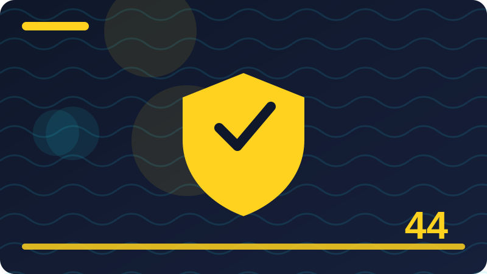

Chapter 44: Security Policies and Checklists in Plain Words

Section 1: What a Security Policy Is
In this section on what a security policy is, we focus on one practical part of security policies and checklists in plain words. This section explains one idea in plain words, without jargon getting in the way. If a word feels new, pause and picture what it means in everyday life before you move on. Security ideas often sound complicated because experts use short technical words for simple actions, like locking a door, checking a list, or writing a note. Once you translate the idea into everyday language, the next step usually becomes obvious.
People often ask whether one person can really make a difference against large online threats. The honest answer is yes, at the level that matters most: your own accounts, your own home, and your own team. Most harm starts with a simple weakness close to home, not with a spectacular break-in. By fixing the simple weaknesses first, you remove the easiest path and force any attacker to work much harder, which usually means they move on.
Here is a safe way to practise. First, write down what you want to check and why, in one sentence. Second, work only on a device, account, or network that belongs to you, or that you have clear written permission to use. Third, change one thing at a time and write down what changed, so you can undo it if needed. Fourth, check that everything still works after your change. Fifth, keep your note somewhere safe, because good notes turn a single experiment into lasting knowledge.
When you think about what a security policy is, keep the same defender mindset you have used throughout this book: work only on systems you own or have written permission to use, change one thing at a time, and keep notes. Another common mistake is treating a tool or a checklist as a guarantee. No tool makes you perfectly safe, and no checklist covers every situation. Tools help you see and organise, but your judgement decides what matters. If a tool reports something alarming, read the detail, check it against what you know about your own devices, and consider whether it matches normal behaviour. Calm checking beats quick panic, and asking for help beats silent worry.
Before you move on, take one small action from this section today, not ten actions tomorrow. A single completed action, written down and checked, is real progress. Tomorrow you can take the next one. Over weeks, those single actions add up to a home, a team, or a career that is noticeably safer, and to confidence that is based on practice rather than hope. When in doubt, choose the safer, simpler option and ask for help. There is no prize for guessing, and a short question to a trusted person can prevent a long repair later. Write things down in your own words. Notes help you remember, help you explain your choices to others, and help you undo a change if it does not work as expected.
Check: In your own words, what is the most important idea from this section on what a security policy is, and what safe step will you take on your own devices?
Section 2: Why Small Teams Need Policies
In this section on why small teams need policies, we focus on one practical part of security policies and checklists in plain words. Welcome to a topic that sounds technical but rests on common sense. You already make safety decisions every day, such as locking your home, keeping keys private, and noticing when something looks out of place. This section builds on those habits and shows how the same thinking protects computers, phones, and home networks. Nothing here asks you to take risks or to test anyone else's system.
Why does this matter for an ordinary person? Because small, repeated habits decide most security outcomes. A single strong habit, repeated every week, protects you more than a dramatic one-time fix that you forget. Attackers, scammers, and careless mistakes all look for the easy opening: an unchanged password, an old device, or a setting nobody checked. Closing those easy openings, one at a time, is the heart of good defence.
A useful routine has four parts: look, think, act, and check. Look at the current setting or list before you touch anything. Think about what good looks like and what could go wrong if you change it carelessly. Act with one small, reversible step. Then check the result and write it down. If anything feels unclear, stop and ask a trusted source or a knowledgeable friend instead of guessing. Stopping is not failure; it is good security practice.
When you think about why small teams need policies, keep the same defender mindset you have used throughout this book: work only on systems you own or have written permission to use, change one thing at a time, and keep notes. Watch out for the temptation to test boundaries that are not yours. Curiosity is a strength for a defender, but it must stay inside permission. Never probe a neighbour's network, a workplace system you do not manage, or a website you do not own, even if you mean no harm. Unauthorised testing can break things, break trust, and break the law. The safe outlet for curiosity is your own lab, your own accounts, and exercises with clear written permission.
To finish, ask yourself three questions: what did I learn, what did I change, and what will I check next week? Write the answers in plain words, as if you were explaining them to a friend who missed the lesson. Teaching an idea in your own words is one of the best ways to remember it. If you cannot explain it simply yet, that is useful information too: it tells you which part to revisit, not that you have failed. Write things down in your own words. Notes help you remember, help you explain your choices to others, and help you undo a change if it does not work as expected. Remember that every household and every team is different. Adapt general advice to your own devices, your own people, and your own risks, rather than copying someone else's setup exactly.
Check: In your own words, what is the most important idea from this section on why small teams need policies, and what safe step will you take on your own devices?
Section 3: Policies Are Not Just Paperwork
In this section on policies are not just paperwork, we focus on one practical part of security policies and checklists in plain words. Think of this topic as one small, practical skill rather than a big mystery. You do not need special talent to understand it, and you do not need expensive equipment to practise it well. The goal of this section is to give you a clear picture you can explain to a friend, and a few safe steps you can try on your own devices. Take it slowly, read each idea twice if it helps, and remember that steady learning beats rushing every time.
The reason this matters is not fear, but control. When you understand what is happening on your own devices, you can make calm choices instead of guessing under pressure. You will know what normal looks like, so unusual things stand out sooner. You will also know what to do next, which keeps a small problem from turning into a large one. That calm, informed control is what employers, families, and communities value in a defender.
Start small and build confidence gradually. Choose the simplest version of the task first, complete it fully, and only then try a slightly harder version. For example, practise on one device before you try three, and practise with a written checklist before you try from memory. Each small success teaches you what normal looks like and makes the next step easier. Rushing to the hardest version first usually creates confusion and mistakes that are easy to avoid.
When you think about policies are not just paperwork, keep the same defender mindset you have used throughout this book: work only on systems you own or have written permission to use, change one thing at a time, and keep notes. Common mistakes are worth naming, because beginners often make the same ones. The first is changing many settings at once, which makes it hard to know what helped and what caused a problem. The second is copying a setting from the internet without checking whether it fits your own device or household. The third is forgetting to write down the original setting, so undoing a change becomes guesswork. Avoid all three by moving slowly, checking your own device manual, and keeping notes.
Finally, connect this section to your wider learning. Notice how it links to passwords, updates, backups, and careful habits you have already studied. Security is not a set of separate tricks; it is a connected routine where each habit supports the others. A strong password matters more when updates are current, and backups matter more when you practise recovery. Seeing those links helps you build a routine that lasts, rather than a collection of one-time fixes. Remember that every household and every team is different. Adapt general advice to your own devices, your own people, and your own risks, rather than copying someone else's setup exactly.
Check: In your own words, what is the most important idea from this section on policies are not just paperwork, and what safe step will you take on your own devices?
Section 4: Writing in Plain Words
In this section on writing in plain words, we focus on one practical part of security policies and checklists in plain words. This section explains one idea in plain words, without jargon getting in the way. If a word feels new, pause and picture what it means in everyday life before you move on. Security ideas often sound complicated because experts use short technical words for simple actions, like locking a door, checking a list, or writing a note. Once you translate the idea into everyday language, the next step usually becomes obvious.
People often ask whether one person can really make a difference against large online threats. The honest answer is yes, at the level that matters most: your own accounts, your own home, and your own team. Most harm starts with a simple weakness close to home, not with a spectacular break-in. By fixing the simple weaknesses first, you remove the easiest path and force any attacker to work much harder, which usually means they move on.
Here is a safe way to practise. First, write down what you want to check and why, in one sentence. Second, work only on a device, account, or network that belongs to you, or that you have clear written permission to use. Third, change one thing at a time and write down what changed, so you can undo it if needed. Fourth, check that everything still works after your change. Fifth, keep your note somewhere safe, because good notes turn a single experiment into lasting knowledge.
When you think about writing in plain words, keep the same defender mindset you have used throughout this book: work only on systems you own or have written permission to use, change one thing at a time, and keep notes. Another common mistake is treating a tool or a checklist as a guarantee. No tool makes you perfectly safe, and no checklist covers every situation. Tools help you see and organise, but your judgement decides what matters. If a tool reports something alarming, read the detail, check it against what you know about your own devices, and consider whether it matches normal behaviour. Calm checking beats quick panic, and asking for help beats silent worry.
Before you move on, take one small action from this section today, not ten actions tomorrow. A single completed action, written down and checked, is real progress. Tomorrow you can take the next one. Over weeks, those single actions add up to a home, a team, or a career that is noticeably safer, and to confidence that is based on practice rather than hope. Check your work after you finish. A quick check that things still work, and that you can undo what you did, is part of the task, not an extra step. Keep learning in small steps. One clear idea, practised well, is worth more than ten ideas skimmed and forgotten.
Check: In your own words, what is the most important idea from this section on writing in plain words, and what safe step will you take on your own devices?
Section 5: Who a Policy Is For
In this section on who a policy is for, we focus on one practical part of security policies and checklists in plain words. Welcome to a topic that sounds technical but rests on common sense. You already make safety decisions every day, such as locking your home, keeping keys private, and noticing when something looks out of place. This section builds on those habits and shows how the same thinking protects computers, phones, and home networks. Nothing here asks you to take risks or to test anyone else's system.
Why does this matter for an ordinary person? Because small, repeated habits decide most security outcomes. A single strong habit, repeated every week, protects you more than a dramatic one-time fix that you forget. Attackers, scammers, and careless mistakes all look for the easy opening: an unchanged password, an old device, or a setting nobody checked. Closing those easy openings, one at a time, is the heart of good defence.
A useful routine has four parts: look, think, act, and check. Look at the current setting or list before you touch anything. Think about what good looks like and what could go wrong if you change it carelessly. Act with one small, reversible step. Then check the result and write it down. If anything feels unclear, stop and ask a trusted source or a knowledgeable friend instead of guessing. Stopping is not failure; it is good security practice.
When you think about who a policy is for, keep the same defender mindset you have used throughout this book: work only on systems you own or have written permission to use, change one thing at a time, and keep notes. Watch out for the temptation to test boundaries that are not yours. Curiosity is a strength for a defender, but it must stay inside permission. Never probe a neighbour's network, a workplace system you do not manage, or a website you do not own, even if you mean no harm. Unauthorised testing can break things, break trust, and break the law. The safe outlet for curiosity is your own lab, your own accounts, and exercises with clear written permission.
To finish, ask yourself three questions: what did I learn, what did I change, and what will I check next week? Write the answers in plain words, as if you were explaining them to a friend who missed the lesson. Teaching an idea in your own words is one of the best ways to remember it. If you cannot explain it simply yet, that is useful information too: it tells you which part to revisit, not that you have failed. Keep learning in small steps. One clear idea, practised well, is worth more than ten ideas skimmed and forgotten. Respect other people's privacy while you practise. Work only with your own data and devices, and ask permission before you look at anything that belongs to someone else.
# Defensive checklist helper: print a checklist for YOUR OWN team or home.
# Checklists remind people; they do not replace judgement or permission.
checklist = ['Passwords updated', 'Devices updated', 'Backup checked', 'Unknown devices reviewed']
for i, item in enumerate(checklist, start=1):
print(f'{i}. {item} - done? (yes / no)')Check: In your own words, what is the most important idea from this section on who a policy is for, and what safe step will you take on your own devices?
Section 6: Acceptable Use in Plain Words
In this section on acceptable use in plain words, we focus on one practical part of security policies and checklists in plain words. Think of this topic as one small, practical skill rather than a big mystery. You do not need special talent to understand it, and you do not need expensive equipment to practise it well. The goal of this section is to give you a clear picture you can explain to a friend, and a few safe steps you can try on your own devices. Take it slowly, read each idea twice if it helps, and remember that steady learning beats rushing every time.
The reason this matters is not fear, but control. When you understand what is happening on your own devices, you can make calm choices instead of guessing under pressure. You will know what normal looks like, so unusual things stand out sooner. You will also know what to do next, which keeps a small problem from turning into a large one. That calm, informed control is what employers, families, and communities value in a defender.
Start small and build confidence gradually. Choose the simplest version of the task first, complete it fully, and only then try a slightly harder version. For example, practise on one device before you try three, and practise with a written checklist before you try from memory. Each small success teaches you what normal looks like and makes the next step easier. Rushing to the hardest version first usually creates confusion and mistakes that are easy to avoid.
When you think about acceptable use in plain words, keep the same defender mindset you have used throughout this book: work only on systems you own or have written permission to use, change one thing at a time, and keep notes. Common mistakes are worth naming, because beginners often make the same ones. The first is changing many settings at once, which makes it hard to know what helped and what caused a problem. The second is copying a setting from the internet without checking whether it fits your own device or household. The third is forgetting to write down the original setting, so undoing a change becomes guesswork. Avoid all three by moving slowly, checking your own device manual, and keeping notes.
Finally, connect this section to your wider learning. Notice how it links to passwords, updates, backups, and careful habits you have already studied. Security is not a set of separate tricks; it is a connected routine where each habit supports the others. A strong password matters more when updates are current, and backups matter more when you practise recovery. Seeing those links helps you build a routine that lasts, rather than a collection of one-time fixes. Respect other people's privacy while you practise. Work only with your own data and devices, and ask permission before you look at anything that belongs to someone else.
Check: In your own words, what is the most important idea from this section on acceptable use in plain words, and what safe step will you take on your own devices?
Section 7: Password Policy Basics
In this section on password policy basics, we focus on one practical part of security policies and checklists in plain words. This section explains one idea in plain words, without jargon getting in the way. If a word feels new, pause and picture what it means in everyday life before you move on. Security ideas often sound complicated because experts use short technical words for simple actions, like locking a door, checking a list, or writing a note. Once you translate the idea into everyday language, the next step usually becomes obvious.
People often ask whether one person can really make a difference against large online threats. The honest answer is yes, at the level that matters most: your own accounts, your own home, and your own team. Most harm starts with a simple weakness close to home, not with a spectacular break-in. By fixing the simple weaknesses first, you remove the easiest path and force any attacker to work much harder, which usually means they move on.
Here is a safe way to practise. First, write down what you want to check and why, in one sentence. Second, work only on a device, account, or network that belongs to you, or that you have clear written permission to use. Third, change one thing at a time and write down what changed, so you can undo it if needed. Fourth, check that everything still works after your change. Fifth, keep your note somewhere safe, because good notes turn a single experiment into lasting knowledge.
When you think about password policy basics, keep the same defender mindset you have used throughout this book: work only on systems you own or have written permission to use, change one thing at a time, and keep notes. Another common mistake is treating a tool or a checklist as a guarantee. No tool makes you perfectly safe, and no checklist covers every situation. Tools help you see and organise, but your judgement decides what matters. If a tool reports something alarming, read the detail, check it against what you know about your own devices, and consider whether it matches normal behaviour. Calm checking beats quick panic, and asking for help beats silent worry.
Before you move on, take one small action from this section today, not ten actions tomorrow. A single completed action, written down and checked, is real progress. Tomorrow you can take the next one. Over weeks, those single actions add up to a home, a team, or a career that is noticeably safer, and to confidence that is based on practice rather than hope. Stay patient with yourself. Security skills grow through repetition, and early confusion is normal. Revisit a section after a week of practice and it will often feel much clearer. Good defence is mostly about attention and routine, not about secret knowledge. Pay attention to what changes, keep a simple routine, and review your notes regularly, and you will catch most problems while they are still small.
Check: In your own words, what is the most important idea from this section on password policy basics, and what safe step will you take on your own devices?
Section 8: Device Policy Basics
In this section on device policy basics, we focus on one practical part of security policies and checklists in plain words. Welcome to a topic that sounds technical but rests on common sense. You already make safety decisions every day, such as locking your home, keeping keys private, and noticing when something looks out of place. This section builds on those habits and shows how the same thinking protects computers, phones, and home networks. Nothing here asks you to take risks or to test anyone else's system.
Why does this matter for an ordinary person? Because small, repeated habits decide most security outcomes. A single strong habit, repeated every week, protects you more than a dramatic one-time fix that you forget. Attackers, scammers, and careless mistakes all look for the easy opening: an unchanged password, an old device, or a setting nobody checked. Closing those easy openings, one at a time, is the heart of good defence.
A useful routine has four parts: look, think, act, and check. Look at the current setting or list before you touch anything. Think about what good looks like and what could go wrong if you change it carelessly. Act with one small, reversible step. Then check the result and write it down. If anything feels unclear, stop and ask a trusted source or a knowledgeable friend instead of guessing. Stopping is not failure; it is good security practice.
When you think about device policy basics, keep the same defender mindset you have used throughout this book: work only on systems you own or have written permission to use, change one thing at a time, and keep notes. Watch out for the temptation to test boundaries that are not yours. Curiosity is a strength for a defender, but it must stay inside permission. Never probe a neighbour's network, a workplace system you do not manage, or a website you do not own, even if you mean no harm. Unauthorised testing can break things, break trust, and break the law. The safe outlet for curiosity is your own lab, your own accounts, and exercises with clear written permission.
To finish, ask yourself three questions: what did I learn, what did I change, and what will I check next week? Write the answers in plain words, as if you were explaining them to a friend who missed the lesson. Teaching an idea in your own words is one of the best ways to remember it. If you cannot explain it simply yet, that is useful information too: it tells you which part to revisit, not that you have failed. Good defence is mostly about attention and routine, not about secret knowledge. Pay attention to what changes, keep a simple routine, and review your notes regularly, and you will catch most problems while they are still small. When in doubt, choose the safer, simpler option and ask for help. There is no prize for guessing, and a short question to a trusted person can prevent a long repair later.
Check: In your own words, what is the most important idea from this section on device policy basics, and what safe step will you take on your own devices?
Section 9: Working From Home Policy
In this section on working from home policy, we focus on one practical part of security policies and checklists in plain words. Think of this topic as one small, practical skill rather than a big mystery. You do not need special talent to understand it, and you do not need expensive equipment to practise it well. The goal of this section is to give you a clear picture you can explain to a friend, and a few safe steps you can try on your own devices. Take it slowly, read each idea twice if it helps, and remember that steady learning beats rushing every time.
The reason this matters is not fear, but control. When you understand what is happening on your own devices, you can make calm choices instead of guessing under pressure. You will know what normal looks like, so unusual things stand out sooner. You will also know what to do next, which keeps a small problem from turning into a large one. That calm, informed control is what employers, families, and communities value in a defender.
Start small and build confidence gradually. Choose the simplest version of the task first, complete it fully, and only then try a slightly harder version. For example, practise on one device before you try three, and practise with a written checklist before you try from memory. Each small success teaches you what normal looks like and makes the next step easier. Rushing to the hardest version first usually creates confusion and mistakes that are easy to avoid.
When you think about working from home policy, keep the same defender mindset you have used throughout this book: work only on systems you own or have written permission to use, change one thing at a time, and keep notes. Common mistakes are worth naming, because beginners often make the same ones. The first is changing many settings at once, which makes it hard to know what helped and what caused a problem. The second is copying a setting from the internet without checking whether it fits your own device or household. The third is forgetting to write down the original setting, so undoing a change becomes guesswork. Avoid all three by moving slowly, checking your own device manual, and keeping notes.
Finally, connect this section to your wider learning. Notice how it links to passwords, updates, backups, and careful habits you have already studied. Security is not a set of separate tricks; it is a connected routine where each habit supports the others. A strong password matters more when updates are current, and backups matter more when you practise recovery. Seeing those links helps you build a routine that lasts, rather than a collection of one-time fixes. When in doubt, choose the safer, simpler option and ask for help. There is no prize for guessing, and a short question to a trusted person can prevent a long repair later.
Check: In your own words, what is the most important idea from this section on working from home policy, and what safe step will you take on your own devices?
Section 10: Email and Phishing Policy
In this section on email and phishing policy, we focus on one practical part of security policies and checklists in plain words. This section explains one idea in plain words, without jargon getting in the way. If a word feels new, pause and picture what it means in everyday life before you move on. Security ideas often sound complicated because experts use short technical words for simple actions, like locking a door, checking a list, or writing a note. Once you translate the idea into everyday language, the next step usually becomes obvious.
People often ask whether one person can really make a difference against large online threats. The honest answer is yes, at the level that matters most: your own accounts, your own home, and your own team. Most harm starts with a simple weakness close to home, not with a spectacular break-in. By fixing the simple weaknesses first, you remove the easiest path and force any attacker to work much harder, which usually means they move on.
Here is a safe way to practise. First, write down what you want to check and why, in one sentence. Second, work only on a device, account, or network that belongs to you, or that you have clear written permission to use. Third, change one thing at a time and write down what changed, so you can undo it if needed. Fourth, check that everything still works after your change. Fifth, keep your note somewhere safe, because good notes turn a single experiment into lasting knowledge.
When you think about email and phishing policy, keep the same defender mindset you have used throughout this book: work only on systems you own or have written permission to use, change one thing at a time, and keep notes. Another common mistake is treating a tool or a checklist as a guarantee. No tool makes you perfectly safe, and no checklist covers every situation. Tools help you see and organise, but your judgement decides what matters. If a tool reports something alarming, read the detail, check it against what you know about your own devices, and consider whether it matches normal behaviour. Calm checking beats quick panic, and asking for help beats silent worry.
Before you move on, take one small action from this section today, not ten actions tomorrow. A single completed action, written down and checked, is real progress. Tomorrow you can take the next one. Over weeks, those single actions add up to a home, a team, or a career that is noticeably safer, and to confidence that is based on practice rather than hope. Write things down in your own words. Notes help you remember, help you explain your choices to others, and help you undo a change if it does not work as expected. Remember that every household and every team is different. Adapt general advice to your own devices, your own people, and your own risks, rather than copying someone else's setup exactly.
# Defensive checklist helper: print a checklist for YOUR OWN team or home.
# Checklists remind people; they do not replace judgement or permission.
checklist = ['Passwords updated', 'Devices updated', 'Backup checked', 'Unknown devices reviewed']
for i, item in enumerate(checklist, start=1):
print(f'{i}. {item} - done? (yes / no)')Check: In your own words, what is the most important idea from this section on email and phishing policy, and what safe step will you take on your own devices?
Section 11: Social Media Policy for Work
In this section on social media policy for work, we focus on one practical part of security policies and checklists in plain words. Welcome to a topic that sounds technical but rests on common sense. You already make safety decisions every day, such as locking your home, keeping keys private, and noticing when something looks out of place. This section builds on those habits and shows how the same thinking protects computers, phones, and home networks. Nothing here asks you to take risks or to test anyone else's system.
Why does this matter for an ordinary person? Because small, repeated habits decide most security outcomes. A single strong habit, repeated every week, protects you more than a dramatic one-time fix that you forget. Attackers, scammers, and careless mistakes all look for the easy opening: an unchanged password, an old device, or a setting nobody checked. Closing those easy openings, one at a time, is the heart of good defence.
A useful routine has four parts: look, think, act, and check. Look at the current setting or list before you touch anything. Think about what good looks like and what could go wrong if you change it carelessly. Act with one small, reversible step. Then check the result and write it down. If anything feels unclear, stop and ask a trusted source or a knowledgeable friend instead of guessing. Stopping is not failure; it is good security practice.
When you think about social media policy for work, keep the same defender mindset you have used throughout this book: work only on systems you own or have written permission to use, change one thing at a time, and keep notes. Watch out for the temptation to test boundaries that are not yours. Curiosity is a strength for a defender, but it must stay inside permission. Never probe a neighbour's network, a workplace system you do not manage, or a website you do not own, even if you mean no harm. Unauthorised testing can break things, break trust, and break the law. The safe outlet for curiosity is your own lab, your own accounts, and exercises with clear written permission.
To finish, ask yourself three questions: what did I learn, what did I change, and what will I check next week? Write the answers in plain words, as if you were explaining them to a friend who missed the lesson. Teaching an idea in your own words is one of the best ways to remember it. If you cannot explain it simply yet, that is useful information too: it tells you which part to revisit, not that you have failed. Remember that every household and every team is different. Adapt general advice to your own devices, your own people, and your own risks, rather than copying someone else's setup exactly. Check your work after you finish. A quick check that things still work, and that you can undo what you did, is part of the task, not an extra step.
Check: In your own words, what is the most important idea from this section on social media policy for work, and what safe step will you take on your own devices?
Section 12: Data Handling Rules
In this section on data handling rules, we focus on one practical part of security policies and checklists in plain words. Think of this topic as one small, practical skill rather than a big mystery. You do not need special talent to understand it, and you do not need expensive equipment to practise it well. The goal of this section is to give you a clear picture you can explain to a friend, and a few safe steps you can try on your own devices. Take it slowly, read each idea twice if it helps, and remember that steady learning beats rushing every time.
The reason this matters is not fear, but control. When you understand what is happening on your own devices, you can make calm choices instead of guessing under pressure. You will know what normal looks like, so unusual things stand out sooner. You will also know what to do next, which keeps a small problem from turning into a large one. That calm, informed control is what employers, families, and communities value in a defender.
Start small and build confidence gradually. Choose the simplest version of the task first, complete it fully, and only then try a slightly harder version. For example, practise on one device before you try three, and practise with a written checklist before you try from memory. Each small success teaches you what normal looks like and makes the next step easier. Rushing to the hardest version first usually creates confusion and mistakes that are easy to avoid.
When you think about data handling rules, keep the same defender mindset you have used throughout this book: work only on systems you own or have written permission to use, change one thing at a time, and keep notes. Common mistakes are worth naming, because beginners often make the same ones. The first is changing many settings at once, which makes it hard to know what helped and what caused a problem. The second is copying a setting from the internet without checking whether it fits your own device or household. The third is forgetting to write down the original setting, so undoing a change becomes guesswork. Avoid all three by moving slowly, checking your own device manual, and keeping notes.
Finally, connect this section to your wider learning. Notice how it links to passwords, updates, backups, and careful habits you have already studied. Security is not a set of separate tricks; it is a connected routine where each habit supports the others. A strong password matters more when updates are current, and backups matter more when you practise recovery. Seeing those links helps you build a routine that lasts, rather than a collection of one-time fixes. Check your work after you finish. A quick check that things still work, and that you can undo what you did, is part of the task, not an extra step.
Check: In your own words, what is the most important idea from this section on data handling rules, and what safe step will you take on your own devices?
Section 13: Who Can Access What
In this section on who can access what, we focus on one practical part of security policies and checklists in plain words. This section explains one idea in plain words, without jargon getting in the way. If a word feels new, pause and picture what it means in everyday life before you move on. Security ideas often sound complicated because experts use short technical words for simple actions, like locking a door, checking a list, or writing a note. Once you translate the idea into everyday language, the next step usually becomes obvious.
People often ask whether one person can really make a difference against large online threats. The honest answer is yes, at the level that matters most: your own accounts, your own home, and your own team. Most harm starts with a simple weakness close to home, not with a spectacular break-in. By fixing the simple weaknesses first, you remove the easiest path and force any attacker to work much harder, which usually means they move on.
Here is a safe way to practise. First, write down what you want to check and why, in one sentence. Second, work only on a device, account, or network that belongs to you, or that you have clear written permission to use. Third, change one thing at a time and write down what changed, so you can undo it if needed. Fourth, check that everything still works after your change. Fifth, keep your note somewhere safe, because good notes turn a single experiment into lasting knowledge.
When you think about who can access what, keep the same defender mindset you have used throughout this book: work only on systems you own or have written permission to use, change one thing at a time, and keep notes. Another common mistake is treating a tool or a checklist as a guarantee. No tool makes you perfectly safe, and no checklist covers every situation. Tools help you see and organise, but your judgement decides what matters. If a tool reports something alarming, read the detail, check it against what you know about your own devices, and consider whether it matches normal behaviour. Calm checking beats quick panic, and asking for help beats silent worry.
Before you move on, take one small action from this section today, not ten actions tomorrow. A single completed action, written down and checked, is real progress. Tomorrow you can take the next one. Over weeks, those single actions add up to a home, a team, or a career that is noticeably safer, and to confidence that is based on practice rather than hope. Keep learning in small steps. One clear idea, practised well, is worth more than ten ideas skimmed and forgotten. Respect other people's privacy while you practise. Work only with your own data and devices, and ask permission before you look at anything that belongs to someone else.
Check: In your own words, what is the most important idea from this section on who can access what, and what safe step will you take on your own devices?
Section 14: Joiners, Movers and Leavers
In this section on joiners, movers and leavers, we focus on one practical part of security policies and checklists in plain words. Welcome to a topic that sounds technical but rests on common sense. You already make safety decisions every day, such as locking your home, keeping keys private, and noticing when something looks out of place. This section builds on those habits and shows how the same thinking protects computers, phones, and home networks. Nothing here asks you to take risks or to test anyone else's system.
Why does this matter for an ordinary person? Because small, repeated habits decide most security outcomes. A single strong habit, repeated every week, protects you more than a dramatic one-time fix that you forget. Attackers, scammers, and careless mistakes all look for the easy opening: an unchanged password, an old device, or a setting nobody checked. Closing those easy openings, one at a time, is the heart of good defence.
A useful routine has four parts: look, think, act, and check. Look at the current setting or list before you touch anything. Think about what good looks like and what could go wrong if you change it carelessly. Act with one small, reversible step. Then check the result and write it down. If anything feels unclear, stop and ask a trusted source or a knowledgeable friend instead of guessing. Stopping is not failure; it is good security practice.
When you think about joiners, movers and leavers, keep the same defender mindset you have used throughout this book: work only on systems you own or have written permission to use, change one thing at a time, and keep notes. Watch out for the temptation to test boundaries that are not yours. Curiosity is a strength for a defender, but it must stay inside permission. Never probe a neighbour's network, a workplace system you do not manage, or a website you do not own, even if you mean no harm. Unauthorised testing can break things, break trust, and break the law. The safe outlet for curiosity is your own lab, your own accounts, and exercises with clear written permission.
To finish, ask yourself three questions: what did I learn, what did I change, and what will I check next week? Write the answers in plain words, as if you were explaining them to a friend who missed the lesson. Teaching an idea in your own words is one of the best ways to remember it. If you cannot explain it simply yet, that is useful information too: it tells you which part to revisit, not that you have failed. Respect other people's privacy while you practise. Work only with your own data and devices, and ask permission before you look at anything that belongs to someone else. Stay patient with yourself. Security skills grow through repetition, and early confusion is normal. Revisit a section after a week of practice and it will often feel much clearer.
Check: In your own words, what is the most important idea from this section on joiners, movers and leavers, and what safe step will you take on your own devices?
Section 15: When Someone Leaves a Team
In this section on when someone leaves a team, we focus on one practical part of security policies and checklists in plain words. Think of this topic as one small, practical skill rather than a big mystery. You do not need special talent to understand it, and you do not need expensive equipment to practise it well. The goal of this section is to give you a clear picture you can explain to a friend, and a few safe steps you can try on your own devices. Take it slowly, read each idea twice if it helps, and remember that steady learning beats rushing every time.
The reason this matters is not fear, but control. When you understand what is happening on your own devices, you can make calm choices instead of guessing under pressure. You will know what normal looks like, so unusual things stand out sooner. You will also know what to do next, which keeps a small problem from turning into a large one. That calm, informed control is what employers, families, and communities value in a defender.
Start small and build confidence gradually. Choose the simplest version of the task first, complete it fully, and only then try a slightly harder version. For example, practise on one device before you try three, and practise with a written checklist before you try from memory. Each small success teaches you what normal looks like and makes the next step easier. Rushing to the hardest version first usually creates confusion and mistakes that are easy to avoid.
When you think about when someone leaves a team, keep the same defender mindset you have used throughout this book: work only on systems you own or have written permission to use, change one thing at a time, and keep notes. Common mistakes are worth naming, because beginners often make the same ones. The first is changing many settings at once, which makes it hard to know what helped and what caused a problem. The second is copying a setting from the internet without checking whether it fits your own device or household. The third is forgetting to write down the original setting, so undoing a change becomes guesswork. Avoid all three by moving slowly, checking your own device manual, and keeping notes.
Finally, connect this section to your wider learning. Notice how it links to passwords, updates, backups, and careful habits you have already studied. Security is not a set of separate tricks; it is a connected routine where each habit supports the others. A strong password matters more when updates are current, and backups matter more when you practise recovery. Seeing those links helps you build a routine that lasts, rather than a collection of one-time fixes. Stay patient with yourself. Security skills grow through repetition, and early confusion is normal. Revisit a section after a week of practice and it will often feel much clearer.
# Defensive checklist helper: print a checklist for YOUR OWN team or home.
# Checklists remind people; they do not replace judgement or permission.
checklist = ['Passwords updated', 'Devices updated', 'Backup checked', 'Unknown devices reviewed']
for i, item in enumerate(checklist, start=1):
print(f'{i}. {item} - done? (yes / no)')Check: In your own words, what is the most important idea from this section on when someone leaves a team, and what safe step will you take on your own devices?
Section 16: Incident Policy in Plain Words
In this section on incident policy in plain words, we focus on one practical part of security policies and checklists in plain words. This section explains one idea in plain words, without jargon getting in the way. If a word feels new, pause and picture what it means in everyday life before you move on. Security ideas often sound complicated because experts use short technical words for simple actions, like locking a door, checking a list, or writing a note. Once you translate the idea into everyday language, the next step usually becomes obvious.
People often ask whether one person can really make a difference against large online threats. The honest answer is yes, at the level that matters most: your own accounts, your own home, and your own team. Most harm starts with a simple weakness close to home, not with a spectacular break-in. By fixing the simple weaknesses first, you remove the easiest path and force any attacker to work much harder, which usually means they move on.
Here is a safe way to practise. First, write down what you want to check and why, in one sentence. Second, work only on a device, account, or network that belongs to you, or that you have clear written permission to use. Third, change one thing at a time and write down what changed, so you can undo it if needed. Fourth, check that everything still works after your change. Fifth, keep your note somewhere safe, because good notes turn a single experiment into lasting knowledge.
When you think about incident policy in plain words, keep the same defender mindset you have used throughout this book: work only on systems you own or have written permission to use, change one thing at a time, and keep notes. Another common mistake is treating a tool or a checklist as a guarantee. No tool makes you perfectly safe, and no checklist covers every situation. Tools help you see and organise, but your judgement decides what matters. If a tool reports something alarming, read the detail, check it against what you know about your own devices, and consider whether it matches normal behaviour. Calm checking beats quick panic, and asking for help beats silent worry.
Before you move on, take one small action from this section today, not ten actions tomorrow. A single completed action, written down and checked, is real progress. Tomorrow you can take the next one. Over weeks, those single actions add up to a home, a team, or a career that is noticeably safer, and to confidence that is based on practice rather than hope. Good defence is mostly about attention and routine, not about secret knowledge. Pay attention to what changes, keep a simple routine, and review your notes regularly, and you will catch most problems while they are still small. When in doubt, choose the safer, simpler option and ask for help. There is no prize for guessing, and a short question to a trusted person can prevent a long repair later.
Check: In your own words, what is the most important idea from this section on incident policy in plain words, and what safe step will you take on your own devices?
Section 17: Reporting Without Blame
In this section on reporting without blame, we focus on one practical part of security policies and checklists in plain words. Welcome to a topic that sounds technical but rests on common sense. You already make safety decisions every day, such as locking your home, keeping keys private, and noticing when something looks out of place. This section builds on those habits and shows how the same thinking protects computers, phones, and home networks. Nothing here asks you to take risks or to test anyone else's system.
Why does this matter for an ordinary person? Because small, repeated habits decide most security outcomes. A single strong habit, repeated every week, protects you more than a dramatic one-time fix that you forget. Attackers, scammers, and careless mistakes all look for the easy opening: an unchanged password, an old device, or a setting nobody checked. Closing those easy openings, one at a time, is the heart of good defence.
A useful routine has four parts: look, think, act, and check. Look at the current setting or list before you touch anything. Think about what good looks like and what could go wrong if you change it carelessly. Act with one small, reversible step. Then check the result and write it down. If anything feels unclear, stop and ask a trusted source or a knowledgeable friend instead of guessing. Stopping is not failure; it is good security practice.
When you think about reporting without blame, keep the same defender mindset you have used throughout this book: work only on systems you own or have written permission to use, change one thing at a time, and keep notes. Watch out for the temptation to test boundaries that are not yours. Curiosity is a strength for a defender, but it must stay inside permission. Never probe a neighbour's network, a workplace system you do not manage, or a website you do not own, even if you mean no harm. Unauthorised testing can break things, break trust, and break the law. The safe outlet for curiosity is your own lab, your own accounts, and exercises with clear written permission.
To finish, ask yourself three questions: what did I learn, what did I change, and what will I check next week? Write the answers in plain words, as if you were explaining them to a friend who missed the lesson. Teaching an idea in your own words is one of the best ways to remember it. If you cannot explain it simply yet, that is useful information too: it tells you which part to revisit, not that you have failed. When in doubt, choose the safer, simpler option and ask for help. There is no prize for guessing, and a short question to a trusted person can prevent a long repair later. Write things down in your own words. Notes help you remember, help you explain your choices to others, and help you undo a change if it does not work as expected.
Check: In your own words, what is the most important idea from this section on reporting without blame, and what safe step will you take on your own devices?
Section 18: Backup Policy Basics
In this section on backup policy basics, we focus on one practical part of security policies and checklists in plain words. Think of this topic as one small, practical skill rather than a big mystery. You do not need special talent to understand it, and you do not need expensive equipment to practise it well. The goal of this section is to give you a clear picture you can explain to a friend, and a few safe steps you can try on your own devices. Take it slowly, read each idea twice if it helps, and remember that steady learning beats rushing every time.
The reason this matters is not fear, but control. When you understand what is happening on your own devices, you can make calm choices instead of guessing under pressure. You will know what normal looks like, so unusual things stand out sooner. You will also know what to do next, which keeps a small problem from turning into a large one. That calm, informed control is what employers, families, and communities value in a defender.
Start small and build confidence gradually. Choose the simplest version of the task first, complete it fully, and only then try a slightly harder version. For example, practise on one device before you try three, and practise with a written checklist before you try from memory. Each small success teaches you what normal looks like and makes the next step easier. Rushing to the hardest version first usually creates confusion and mistakes that are easy to avoid.
When you think about backup policy basics, keep the same defender mindset you have used throughout this book: work only on systems you own or have written permission to use, change one thing at a time, and keep notes. Common mistakes are worth naming, because beginners often make the same ones. The first is changing many settings at once, which makes it hard to know what helped and what caused a problem. The second is copying a setting from the internet without checking whether it fits your own device or household. The third is forgetting to write down the original setting, so undoing a change becomes guesswork. Avoid all three by moving slowly, checking your own device manual, and keeping notes.
Finally, connect this section to your wider learning. Notice how it links to passwords, updates, backups, and careful habits you have already studied. Security is not a set of separate tricks; it is a connected routine where each habit supports the others. A strong password matters more when updates are current, and backups matter more when you practise recovery. Seeing those links helps you build a routine that lasts, rather than a collection of one-time fixes. Write things down in your own words. Notes help you remember, help you explain your choices to others, and help you undo a change if it does not work as expected.
Check: In your own words, what is the most important idea from this section on backup policy basics, and what safe step will you take on your own devices?
Section 19: Update Policy Basics
In this section on update policy basics, we focus on one practical part of security policies and checklists in plain words. This section explains one idea in plain words, without jargon getting in the way. If a word feels new, pause and picture what it means in everyday life before you move on. Security ideas often sound complicated because experts use short technical words for simple actions, like locking a door, checking a list, or writing a note. Once you translate the idea into everyday language, the next step usually becomes obvious.
People often ask whether one person can really make a difference against large online threats. The honest answer is yes, at the level that matters most: your own accounts, your own home, and your own team. Most harm starts with a simple weakness close to home, not with a spectacular break-in. By fixing the simple weaknesses first, you remove the easiest path and force any attacker to work much harder, which usually means they move on.
Here is a safe way to practise. First, write down what you want to check and why, in one sentence. Second, work only on a device, account, or network that belongs to you, or that you have clear written permission to use. Third, change one thing at a time and write down what changed, so you can undo it if needed. Fourth, check that everything still works after your change. Fifth, keep your note somewhere safe, because good notes turn a single experiment into lasting knowledge.
When you think about update policy basics, keep the same defender mindset you have used throughout this book: work only on systems you own or have written permission to use, change one thing at a time, and keep notes. Another common mistake is treating a tool or a checklist as a guarantee. No tool makes you perfectly safe, and no checklist covers every situation. Tools help you see and organise, but your judgement decides what matters. If a tool reports something alarming, read the detail, check it against what you know about your own devices, and consider whether it matches normal behaviour. Calm checking beats quick panic, and asking for help beats silent worry.
Before you move on, take one small action from this section today, not ten actions tomorrow. A single completed action, written down and checked, is real progress. Tomorrow you can take the next one. Over weeks, those single actions add up to a home, a team, or a career that is noticeably safer, and to confidence that is based on practice rather than hope. Remember that every household and every team is different. Adapt general advice to your own devices, your own people, and your own risks, rather than copying someone else's setup exactly. Check your work after you finish. A quick check that things still work, and that you can undo what you did, is part of the task, not an extra step.
Check: In your own words, what is the most important idea from this section on update policy basics, and what safe step will you take on your own devices?
Section 20: Checklists: Why They Work
In this section on checklists: why they work, we focus on one practical part of security policies and checklists in plain words. Welcome to a topic that sounds technical but rests on common sense. You already make safety decisions every day, such as locking your home, keeping keys private, and noticing when something looks out of place. This section builds on those habits and shows how the same thinking protects computers, phones, and home networks. Nothing here asks you to take risks or to test anyone else's system.
Why does this matter for an ordinary person? Because small, repeated habits decide most security outcomes. A single strong habit, repeated every week, protects you more than a dramatic one-time fix that you forget. Attackers, scammers, and careless mistakes all look for the easy opening: an unchanged password, an old device, or a setting nobody checked. Closing those easy openings, one at a time, is the heart of good defence.
A useful routine has four parts: look, think, act, and check. Look at the current setting or list before you touch anything. Think about what good looks like and what could go wrong if you change it carelessly. Act with one small, reversible step. Then check the result and write it down. If anything feels unclear, stop and ask a trusted source or a knowledgeable friend instead of guessing. Stopping is not failure; it is good security practice.
When you think about checklists: why they work, keep the same defender mindset you have used throughout this book: work only on systems you own or have written permission to use, change one thing at a time, and keep notes. Watch out for the temptation to test boundaries that are not yours. Curiosity is a strength for a defender, but it must stay inside permission. Never probe a neighbour's network, a workplace system you do not manage, or a website you do not own, even if you mean no harm. Unauthorised testing can break things, break trust, and break the law. The safe outlet for curiosity is your own lab, your own accounts, and exercises with clear written permission.
To finish, ask yourself three questions: what did I learn, what did I change, and what will I check next week? Write the answers in plain words, as if you were explaining them to a friend who missed the lesson. Teaching an idea in your own words is one of the best ways to remember it. If you cannot explain it simply yet, that is useful information too: it tells you which part to revisit, not that you have failed. Check your work after you finish. A quick check that things still work, and that you can undo what you did, is part of the task, not an extra step. Keep learning in small steps. One clear idea, practised well, is worth more than ten ideas skimmed and forgotten.
# Defensive checklist helper: print a checklist for YOUR OWN team or home.
# Checklists remind people; they do not replace judgement or permission.
checklist = ['Passwords updated', 'Devices updated', 'Backup checked', 'Unknown devices reviewed']
for i, item in enumerate(checklist, start=1):
print(f'{i}. {item} - done? (yes / no)')Check: In your own words, what is the most important idea from this section on checklists: why they work, and what safe step will you take on your own devices?
Section 21: Building Your First Checklist
In this section on building your first checklist, we focus on one practical part of security policies and checklists in plain words. Think of this topic as one small, practical skill rather than a big mystery. You do not need special talent to understand it, and you do not need expensive equipment to practise it well. The goal of this section is to give you a clear picture you can explain to a friend, and a few safe steps you can try on your own devices. Take it slowly, read each idea twice if it helps, and remember that steady learning beats rushing every time.
The reason this matters is not fear, but control. When you understand what is happening on your own devices, you can make calm choices instead of guessing under pressure. You will know what normal looks like, so unusual things stand out sooner. You will also know what to do next, which keeps a small problem from turning into a large one. That calm, informed control is what employers, families, and communities value in a defender.
Start small and build confidence gradually. Choose the simplest version of the task first, complete it fully, and only then try a slightly harder version. For example, practise on one device before you try three, and practise with a written checklist before you try from memory. Each small success teaches you what normal looks like and makes the next step easier. Rushing to the hardest version first usually creates confusion and mistakes that are easy to avoid.
When you think about building your first checklist, keep the same defender mindset you have used throughout this book: work only on systems you own or have written permission to use, change one thing at a time, and keep notes. Common mistakes are worth naming, because beginners often make the same ones. The first is changing many settings at once, which makes it hard to know what helped and what caused a problem. The second is copying a setting from the internet without checking whether it fits your own device or household. The third is forgetting to write down the original setting, so undoing a change becomes guesswork. Avoid all three by moving slowly, checking your own device manual, and keeping notes.
Finally, connect this section to your wider learning. Notice how it links to passwords, updates, backups, and careful habits you have already studied. Security is not a set of separate tricks; it is a connected routine where each habit supports the others. A strong password matters more when updates are current, and backups matter more when you practise recovery. Seeing those links helps you build a routine that lasts, rather than a collection of one-time fixes. Keep learning in small steps. One clear idea, practised well, is worth more than ten ideas skimmed and forgotten. Respect other people's privacy while you practise. Work only with your own data and devices, and ask permission before you look at anything that belongs to someone else.
Check: In your own words, what is the most important idea from this section on building your first checklist, and what safe step will you take on your own devices?
Section 22: Daily Security Checklist
In this section on daily security checklist, we focus on one practical part of security policies and checklists in plain words. This section explains one idea in plain words, without jargon getting in the way. If a word feels new, pause and picture what it means in everyday life before you move on. Security ideas often sound complicated because experts use short technical words for simple actions, like locking a door, checking a list, or writing a note. Once you translate the idea into everyday language, the next step usually becomes obvious.
People often ask whether one person can really make a difference against large online threats. The honest answer is yes, at the level that matters most: your own accounts, your own home, and your own team. Most harm starts with a simple weakness close to home, not with a spectacular break-in. By fixing the simple weaknesses first, you remove the easiest path and force any attacker to work much harder, which usually means they move on.
Here is a safe way to practise. First, write down what you want to check and why, in one sentence. Second, work only on a device, account, or network that belongs to you, or that you have clear written permission to use. Third, change one thing at a time and write down what changed, so you can undo it if needed. Fourth, check that everything still works after your change. Fifth, keep your note somewhere safe, because good notes turn a single experiment into lasting knowledge.
When you think about daily security checklist, keep the same defender mindset you have used throughout this book: work only on systems you own or have written permission to use, change one thing at a time, and keep notes. Another common mistake is treating a tool or a checklist as a guarantee. No tool makes you perfectly safe, and no checklist covers every situation. Tools help you see and organise, but your judgement decides what matters. If a tool reports something alarming, read the detail, check it against what you know about your own devices, and consider whether it matches normal behaviour. Calm checking beats quick panic, and asking for help beats silent worry.
Before you move on, take one small action from this section today, not ten actions tomorrow. A single completed action, written down and checked, is real progress. Tomorrow you can take the next one. Over weeks, those single actions add up to a home, a team, or a career that is noticeably safer, and to confidence that is based on practice rather than hope. Respect other people's privacy while you practise. Work only with your own data and devices, and ask permission before you look at anything that belongs to someone else. Stay patient with yourself. Security skills grow through repetition, and early confusion is normal. Revisit a section after a week of practice and it will often feel much clearer.
Check: In your own words, what is the most important idea from this section on daily security checklist, and what safe step will you take on your own devices?
Section 23: Weekly Security Checklist
In this section on weekly security checklist, we focus on one practical part of security policies and checklists in plain words. Welcome to a topic that sounds technical but rests on common sense. You already make safety decisions every day, such as locking your home, keeping keys private, and noticing when something looks out of place. This section builds on those habits and shows how the same thinking protects computers, phones, and home networks. Nothing here asks you to take risks or to test anyone else's system.
Why does this matter for an ordinary person? Because small, repeated habits decide most security outcomes. A single strong habit, repeated every week, protects you more than a dramatic one-time fix that you forget. Attackers, scammers, and careless mistakes all look for the easy opening: an unchanged password, an old device, or a setting nobody checked. Closing those easy openings, one at a time, is the heart of good defence.
A useful routine has four parts: look, think, act, and check. Look at the current setting or list before you touch anything. Think about what good looks like and what could go wrong if you change it carelessly. Act with one small, reversible step. Then check the result and write it down. If anything feels unclear, stop and ask a trusted source or a knowledgeable friend instead of guessing. Stopping is not failure; it is good security practice.
When you think about weekly security checklist, keep the same defender mindset you have used throughout this book: work only on systems you own or have written permission to use, change one thing at a time, and keep notes. Watch out for the temptation to test boundaries that are not yours. Curiosity is a strength for a defender, but it must stay inside permission. Never probe a neighbour's network, a workplace system you do not manage, or a website you do not own, even if you mean no harm. Unauthorised testing can break things, break trust, and break the law. The safe outlet for curiosity is your own lab, your own accounts, and exercises with clear written permission.
To finish, ask yourself three questions: what did I learn, what did I change, and what will I check next week? Write the answers in plain words, as if you were explaining them to a friend who missed the lesson. Teaching an idea in your own words is one of the best ways to remember it. If you cannot explain it simply yet, that is useful information too: it tells you which part to revisit, not that you have failed. Stay patient with yourself. Security skills grow through repetition, and early confusion is normal. Revisit a section after a week of practice and it will often feel much clearer. Good defence is mostly about attention and routine, not about secret knowledge. Pay attention to what changes, keep a simple routine, and review your notes regularly, and you will catch most problems while they are still small.
Check: In your own words, what is the most important idea from this section on weekly security checklist, and what safe step will you take on your own devices?
Section 24: Monthly Security Checklist
In this section on monthly security checklist, we focus on one practical part of security policies and checklists in plain words. Think of this topic as one small, practical skill rather than a big mystery. You do not need special talent to understand it, and you do not need expensive equipment to practise it well. The goal of this section is to give you a clear picture you can explain to a friend, and a few safe steps you can try on your own devices. Take it slowly, read each idea twice if it helps, and remember that steady learning beats rushing every time.
The reason this matters is not fear, but control. When you understand what is happening on your own devices, you can make calm choices instead of guessing under pressure. You will know what normal looks like, so unusual things stand out sooner. You will also know what to do next, which keeps a small problem from turning into a large one. That calm, informed control is what employers, families, and communities value in a defender.
Start small and build confidence gradually. Choose the simplest version of the task first, complete it fully, and only then try a slightly harder version. For example, practise on one device before you try three, and practise with a written checklist before you try from memory. Each small success teaches you what normal looks like and makes the next step easier. Rushing to the hardest version first usually creates confusion and mistakes that are easy to avoid.
When you think about monthly security checklist, keep the same defender mindset you have used throughout this book: work only on systems you own or have written permission to use, change one thing at a time, and keep notes. Common mistakes are worth naming, because beginners often make the same ones. The first is changing many settings at once, which makes it hard to know what helped and what caused a problem. The second is copying a setting from the internet without checking whether it fits your own device or household. The third is forgetting to write down the original setting, so undoing a change becomes guesswork. Avoid all three by moving slowly, checking your own device manual, and keeping notes.
Finally, connect this section to your wider learning. Notice how it links to passwords, updates, backups, and careful habits you have already studied. Security is not a set of separate tricks; it is a connected routine where each habit supports the others. A strong password matters more when updates are current, and backups matter more when you practise recovery. Seeing those links helps you build a routine that lasts, rather than a collection of one-time fixes. Good defence is mostly about attention and routine, not about secret knowledge. Pay attention to what changes, keep a simple routine, and review your notes regularly, and you will catch most problems while they are still small.
Check: In your own words, what is the most important idea from this section on monthly security checklist, and what safe step will you take on your own devices?
Section 25: New Starter Checklist
In this section on new starter checklist, we focus on one practical part of security policies and checklists in plain words. This section explains one idea in plain words, without jargon getting in the way. If a word feels new, pause and picture what it means in everyday life before you move on. Security ideas often sound complicated because experts use short technical words for simple actions, like locking a door, checking a list, or writing a note. Once you translate the idea into everyday language, the next step usually becomes obvious.
People often ask whether one person can really make a difference against large online threats. The honest answer is yes, at the level that matters most: your own accounts, your own home, and your own team. Most harm starts with a simple weakness close to home, not with a spectacular break-in. By fixing the simple weaknesses first, you remove the easiest path and force any attacker to work much harder, which usually means they move on.
Here is a safe way to practise. First, write down what you want to check and why, in one sentence. Second, work only on a device, account, or network that belongs to you, or that you have clear written permission to use. Third, change one thing at a time and write down what changed, so you can undo it if needed. Fourth, check that everything still works after your change. Fifth, keep your note somewhere safe, because good notes turn a single experiment into lasting knowledge.
When you think about new starter checklist, keep the same defender mindset you have used throughout this book: work only on systems you own or have written permission to use, change one thing at a time, and keep notes. Another common mistake is treating a tool or a checklist as a guarantee. No tool makes you perfectly safe, and no checklist covers every situation. Tools help you see and organise, but your judgement decides what matters. If a tool reports something alarming, read the detail, check it against what you know about your own devices, and consider whether it matches normal behaviour. Calm checking beats quick panic, and asking for help beats silent worry.
Before you move on, take one small action from this section today, not ten actions tomorrow. A single completed action, written down and checked, is real progress. Tomorrow you can take the next one. Over weeks, those single actions add up to a home, a team, or a career that is noticeably safer, and to confidence that is based on practice rather than hope. When in doubt, choose the safer, simpler option and ask for help. There is no prize for guessing, and a short question to a trusted person can prevent a long repair later. Write things down in your own words. Notes help you remember, help you explain your choices to others, and help you undo a change if it does not work as expected.
# Defensive checklist helper: print a checklist for YOUR OWN team or home.
# Checklists remind people; they do not replace judgement or permission.
checklist = ['Passwords updated', 'Devices updated', 'Backup checked', 'Unknown devices reviewed']
for i, item in enumerate(checklist, start=1):
print(f'{i}. {item} - done? (yes / no)')Check: In your own words, what is the most important idea from this section on new starter checklist, and what safe step will you take on your own devices?
Section 26: Leaver Checklist
In this section on leaver checklist, we focus on one practical part of security policies and checklists in plain words. Welcome to a topic that sounds technical but rests on common sense. You already make safety decisions every day, such as locking your home, keeping keys private, and noticing when something looks out of place. This section builds on those habits and shows how the same thinking protects computers, phones, and home networks. Nothing here asks you to take risks or to test anyone else's system.
Why does this matter for an ordinary person? Because small, repeated habits decide most security outcomes. A single strong habit, repeated every week, protects you more than a dramatic one-time fix that you forget. Attackers, scammers, and careless mistakes all look for the easy opening: an unchanged password, an old device, or a setting nobody checked. Closing those easy openings, one at a time, is the heart of good defence.
A useful routine has four parts: look, think, act, and check. Look at the current setting or list before you touch anything. Think about what good looks like and what could go wrong if you change it carelessly. Act with one small, reversible step. Then check the result and write it down. If anything feels unclear, stop and ask a trusted source or a knowledgeable friend instead of guessing. Stopping is not failure; it is good security practice.
When you think about leaver checklist, keep the same defender mindset you have used throughout this book: work only on systems you own or have written permission to use, change one thing at a time, and keep notes. Watch out for the temptation to test boundaries that are not yours. Curiosity is a strength for a defender, but it must stay inside permission. Never probe a neighbour's network, a workplace system you do not manage, or a website you do not own, even if you mean no harm. Unauthorised testing can break things, break trust, and break the law. The safe outlet for curiosity is your own lab, your own accounts, and exercises with clear written permission.
To finish, ask yourself three questions: what did I learn, what did I change, and what will I check next week? Write the answers in plain words, as if you were explaining them to a friend who missed the lesson. Teaching an idea in your own words is one of the best ways to remember it. If you cannot explain it simply yet, that is useful information too: it tells you which part to revisit, not that you have failed. Write things down in your own words. Notes help you remember, help you explain your choices to others, and help you undo a change if it does not work as expected. Remember that every household and every team is different. Adapt general advice to your own devices, your own people, and your own risks, rather than copying someone else's setup exactly.
Check: In your own words, what is the most important idea from this section on leaver checklist, and what safe step will you take on your own devices?
Section 27: Travel Checklist
In this section on travel checklist, we focus on one practical part of security policies and checklists in plain words. Think of this topic as one small, practical skill rather than a big mystery. You do not need special talent to understand it, and you do not need expensive equipment to practise it well. The goal of this section is to give you a clear picture you can explain to a friend, and a few safe steps you can try on your own devices. Take it slowly, read each idea twice if it helps, and remember that steady learning beats rushing every time.
The reason this matters is not fear, but control. When you understand what is happening on your own devices, you can make calm choices instead of guessing under pressure. You will know what normal looks like, so unusual things stand out sooner. You will also know what to do next, which keeps a small problem from turning into a large one. That calm, informed control is what employers, families, and communities value in a defender.
Start small and build confidence gradually. Choose the simplest version of the task first, complete it fully, and only then try a slightly harder version. For example, practise on one device before you try three, and practise with a written checklist before you try from memory. Each small success teaches you what normal looks like and makes the next step easier. Rushing to the hardest version first usually creates confusion and mistakes that are easy to avoid.
When you think about travel checklist, keep the same defender mindset you have used throughout this book: work only on systems you own or have written permission to use, change one thing at a time, and keep notes. Common mistakes are worth naming, because beginners often make the same ones. The first is changing many settings at once, which makes it hard to know what helped and what caused a problem. The second is copying a setting from the internet without checking whether it fits your own device or household. The third is forgetting to write down the original setting, so undoing a change becomes guesswork. Avoid all three by moving slowly, checking your own device manual, and keeping notes.
Finally, connect this section to your wider learning. Notice how it links to passwords, updates, backups, and careful habits you have already studied. Security is not a set of separate tricks; it is a connected routine where each habit supports the others. A strong password matters more when updates are current, and backups matter more when you practise recovery. Seeing those links helps you build a routine that lasts, rather than a collection of one-time fixes. Remember that every household and every team is different. Adapt general advice to your own devices, your own people, and your own risks, rather than copying someone else's setup exactly.
Check: In your own words, what is the most important idea from this section on travel checklist, and what safe step will you take on your own devices?
Section 28: Working From a Cafe Checklist
In this section on working from a cafe checklist, we focus on one practical part of security policies and checklists in plain words. This section explains one idea in plain words, without jargon getting in the way. If a word feels new, pause and picture what it means in everyday life before you move on. Security ideas often sound complicated because experts use short technical words for simple actions, like locking a door, checking a list, or writing a note. Once you translate the idea into everyday language, the next step usually becomes obvious.
People often ask whether one person can really make a difference against large online threats. The honest answer is yes, at the level that matters most: your own accounts, your own home, and your own team. Most harm starts with a simple weakness close to home, not with a spectacular break-in. By fixing the simple weaknesses first, you remove the easiest path and force any attacker to work much harder, which usually means they move on.
Here is a safe way to practise. First, write down what you want to check and why, in one sentence. Second, work only on a device, account, or network that belongs to you, or that you have clear written permission to use. Third, change one thing at a time and write down what changed, so you can undo it if needed. Fourth, check that everything still works after your change. Fifth, keep your note somewhere safe, because good notes turn a single experiment into lasting knowledge.
When you think about working from a cafe checklist, keep the same defender mindset you have used throughout this book: work only on systems you own or have written permission to use, change one thing at a time, and keep notes. Another common mistake is treating a tool or a checklist as a guarantee. No tool makes you perfectly safe, and no checklist covers every situation. Tools help you see and organise, but your judgement decides what matters. If a tool reports something alarming, read the detail, check it against what you know about your own devices, and consider whether it matches normal behaviour. Calm checking beats quick panic, and asking for help beats silent worry.
Before you move on, take one small action from this section today, not ten actions tomorrow. A single completed action, written down and checked, is real progress. Tomorrow you can take the next one. Over weeks, those single actions add up to a home, a team, or a career that is noticeably safer, and to confidence that is based on practice rather than hope. Check your work after you finish. A quick check that things still work, and that you can undo what you did, is part of the task, not an extra step. Keep learning in small steps. One clear idea, practised well, is worth more than ten ideas skimmed and forgotten.
Check: In your own words, what is the most important idea from this section on working from a cafe checklist, and what safe step will you take on your own devices?
Section 29: Incident Checklist
In this section on incident checklist, we focus on one practical part of security policies and checklists in plain words. Welcome to a topic that sounds technical but rests on common sense. You already make safety decisions every day, such as locking your home, keeping keys private, and noticing when something looks out of place. This section builds on those habits and shows how the same thinking protects computers, phones, and home networks. Nothing here asks you to take risks or to test anyone else's system.
Why does this matter for an ordinary person? Because small, repeated habits decide most security outcomes. A single strong habit, repeated every week, protects you more than a dramatic one-time fix that you forget. Attackers, scammers, and careless mistakes all look for the easy opening: an unchanged password, an old device, or a setting nobody checked. Closing those easy openings, one at a time, is the heart of good defence.
A useful routine has four parts: look, think, act, and check. Look at the current setting or list before you touch anything. Think about what good looks like and what could go wrong if you change it carelessly. Act with one small, reversible step. Then check the result and write it down. If anything feels unclear, stop and ask a trusted source or a knowledgeable friend instead of guessing. Stopping is not failure; it is good security practice.
When you think about incident checklist, keep the same defender mindset you have used throughout this book: work only on systems you own or have written permission to use, change one thing at a time, and keep notes. Watch out for the temptation to test boundaries that are not yours. Curiosity is a strength for a defender, but it must stay inside permission. Never probe a neighbour's network, a workplace system you do not manage, or a website you do not own, even if you mean no harm. Unauthorised testing can break things, break trust, and break the law. The safe outlet for curiosity is your own lab, your own accounts, and exercises with clear written permission.
To finish, ask yourself three questions: what did I learn, what did I change, and what will I check next week? Write the answers in plain words, as if you were explaining them to a friend who missed the lesson. Teaching an idea in your own words is one of the best ways to remember it. If you cannot explain it simply yet, that is useful information too: it tells you which part to revisit, not that you have failed. Keep learning in small steps. One clear idea, practised well, is worth more than ten ideas skimmed and forgotten. Respect other people's privacy while you practise. Work only with your own data and devices, and ask permission before you look at anything that belongs to someone else. Stay patient with yourself. Security skills grow through repetition, and early confusion is normal. Revisit a section after a week of practice and it will often feel much clearer.
Check: In your own words, what is the most important idea from this section on incident checklist, and what safe step will you take on your own devices?
Section 30: Breach Notification Checklist
In this section on breach notification checklist, we focus on one practical part of security policies and checklists in plain words. Think of this topic as one small, practical skill rather than a big mystery. You do not need special talent to understand it, and you do not need expensive equipment to practise it well. The goal of this section is to give you a clear picture you can explain to a friend, and a few safe steps you can try on your own devices. Take it slowly, read each idea twice if it helps, and remember that steady learning beats rushing every time.
The reason this matters is not fear, but control. When you understand what is happening on your own devices, you can make calm choices instead of guessing under pressure. You will know what normal looks like, so unusual things stand out sooner. You will also know what to do next, which keeps a small problem from turning into a large one. That calm, informed control is what employers, families, and communities value in a defender.
Start small and build confidence gradually. Choose the simplest version of the task first, complete it fully, and only then try a slightly harder version. For example, practise on one device before you try three, and practise with a written checklist before you try from memory. Each small success teaches you what normal looks like and makes the next step easier. Rushing to the hardest version first usually creates confusion and mistakes that are easy to avoid.
When you think about breach notification checklist, keep the same defender mindset you have used throughout this book: work only on systems you own or have written permission to use, change one thing at a time, and keep notes. Common mistakes are worth naming, because beginners often make the same ones. The first is changing many settings at once, which makes it hard to know what helped and what caused a problem. The second is copying a setting from the internet without checking whether it fits your own device or household. The third is forgetting to write down the original setting, so undoing a change becomes guesswork. Avoid all three by moving slowly, checking your own device manual, and keeping notes.
Finally, connect this section to your wider learning. Notice how it links to passwords, updates, backups, and careful habits you have already studied. Security is not a set of separate tricks; it is a connected routine where each habit supports the others. A strong password matters more when updates are current, and backups matter more when you practise recovery. Seeing those links helps you build a routine that lasts, rather than a collection of one-time fixes. Respect other people's privacy while you practise. Work only with your own data and devices, and ask permission before you look at anything that belongs to someone else.
# Defensive checklist helper: print a checklist for YOUR OWN team or home.
# Checklists remind people; they do not replace judgement or permission.
checklist = ['Passwords updated', 'Devices updated', 'Backup checked', 'Unknown devices reviewed']
for i, item in enumerate(checklist, start=1):
print(f'{i}. {item} - done? (yes / no)')Check: In your own words, what is the most important idea from this section on breach notification checklist, and what safe step will you take on your own devices?
Section 31: Reviewing a Policy
In this section on reviewing a policy, we focus on one practical part of security policies and checklists in plain words. This section explains one idea in plain words, without jargon getting in the way. If a word feels new, pause and picture what it means in everyday life before you move on. Security ideas often sound complicated because experts use short technical words for simple actions, like locking a door, checking a list, or writing a note. Once you translate the idea into everyday language, the next step usually becomes obvious.
People often ask whether one person can really make a difference against large online threats. The honest answer is yes, at the level that matters most: your own accounts, your own home, and your own team. Most harm starts with a simple weakness close to home, not with a spectacular break-in. By fixing the simple weaknesses first, you remove the easiest path and force any attacker to work much harder, which usually means they move on.
Here is a safe way to practise. First, write down what you want to check and why, in one sentence. Second, work only on a device, account, or network that belongs to you, or that you have clear written permission to use. Third, change one thing at a time and write down what changed, so you can undo it if needed. Fourth, check that everything still works after your change. Fifth, keep your note somewhere safe, because good notes turn a single experiment into lasting knowledge.
When you think about reviewing a policy, keep the same defender mindset you have used throughout this book: work only on systems you own or have written permission to use, change one thing at a time, and keep notes. Another common mistake is treating a tool or a checklist as a guarantee. No tool makes you perfectly safe, and no checklist covers every situation. Tools help you see and organise, but your judgement decides what matters. If a tool reports something alarming, read the detail, check it against what you know about your own devices, and consider whether it matches normal behaviour. Calm checking beats quick panic, and asking for help beats silent worry.
Before you move on, take one small action from this section today, not ten actions tomorrow. A single completed action, written down and checked, is real progress. Tomorrow you can take the next one. Over weeks, those single actions add up to a home, a team, or a career that is noticeably safer, and to confidence that is based on practice rather than hope. Stay patient with yourself. Security skills grow through repetition, and early confusion is normal. Revisit a section after a week of practice and it will often feel much clearer. Good defence is mostly about attention and routine, not about secret knowledge. Pay attention to what changes, keep a simple routine, and review your notes regularly, and you will catch most problems while they are still small.
Check: In your own words, what is the most important idea from this section on reviewing a policy, and what safe step will you take on your own devices?
Section 32: Updating a Policy
In this section on updating a policy, we focus on one practical part of security policies and checklists in plain words. Welcome to a topic that sounds technical but rests on common sense. You already make safety decisions every day, such as locking your home, keeping keys private, and noticing when something looks out of place. This section builds on those habits and shows how the same thinking protects computers, phones, and home networks. Nothing here asks you to take risks or to test anyone else's system.
Why does this matter for an ordinary person? Because small, repeated habits decide most security outcomes. A single strong habit, repeated every week, protects you more than a dramatic one-time fix that you forget. Attackers, scammers, and careless mistakes all look for the easy opening: an unchanged password, an old device, or a setting nobody checked. Closing those easy openings, one at a time, is the heart of good defence.
A useful routine has four parts: look, think, act, and check. Look at the current setting or list before you touch anything. Think about what good looks like and what could go wrong if you change it carelessly. Act with one small, reversible step. Then check the result and write it down. If anything feels unclear, stop and ask a trusted source or a knowledgeable friend instead of guessing. Stopping is not failure; it is good security practice.
When you think about updating a policy, keep the same defender mindset you have used throughout this book: work only on systems you own or have written permission to use, change one thing at a time, and keep notes. Watch out for the temptation to test boundaries that are not yours. Curiosity is a strength for a defender, but it must stay inside permission. Never probe a neighbour's network, a workplace system you do not manage, or a website you do not own, even if you mean no harm. Unauthorised testing can break things, break trust, and break the law. The safe outlet for curiosity is your own lab, your own accounts, and exercises with clear written permission.
To finish, ask yourself three questions: what did I learn, what did I change, and what will I check next week? Write the answers in plain words, as if you were explaining them to a friend who missed the lesson. Teaching an idea in your own words is one of the best ways to remember it. If you cannot explain it simply yet, that is useful information too: it tells you which part to revisit, not that you have failed. Good defence is mostly about attention and routine, not about secret knowledge. Pay attention to what changes, keep a simple routine, and review your notes regularly, and you will catch most problems while they are still small. When in doubt, choose the safer, simpler option and ask for help. There is no prize for guessing, and a short question to a trusted person can prevent a long repair later.
Check: In your own words, what is the most important idea from this section on updating a policy, and what safe step will you take on your own devices?
Section 33: Getting People to Follow a Policy
In this section on getting people to follow a policy, we focus on one practical part of security policies and checklists in plain words. Think of this topic as one small, practical skill rather than a big mystery. You do not need special talent to understand it, and you do not need expensive equipment to practise it well. The goal of this section is to give you a clear picture you can explain to a friend, and a few safe steps you can try on your own devices. Take it slowly, read each idea twice if it helps, and remember that steady learning beats rushing every time.
The reason this matters is not fear, but control. When you understand what is happening on your own devices, you can make calm choices instead of guessing under pressure. You will know what normal looks like, so unusual things stand out sooner. You will also know what to do next, which keeps a small problem from turning into a large one. That calm, informed control is what employers, families, and communities value in a defender.
Start small and build confidence gradually. Choose the simplest version of the task first, complete it fully, and only then try a slightly harder version. For example, practise on one device before you try three, and practise with a written checklist before you try from memory. Each small success teaches you what normal looks like and makes the next step easier. Rushing to the hardest version first usually creates confusion and mistakes that are easy to avoid.
When you think about getting people to follow a policy, keep the same defender mindset you have used throughout this book: work only on systems you own or have written permission to use, change one thing at a time, and keep notes. Common mistakes are worth naming, because beginners often make the same ones. The first is changing many settings at once, which makes it hard to know what helped and what caused a problem. The second is copying a setting from the internet without checking whether it fits your own device or household. The third is forgetting to write down the original setting, so undoing a change becomes guesswork. Avoid all three by moving slowly, checking your own device manual, and keeping notes.
Finally, connect this section to your wider learning. Notice how it links to passwords, updates, backups, and careful habits you have already studied. Security is not a set of separate tricks; it is a connected routine where each habit supports the others. A strong password matters more when updates are current, and backups matter more when you practise recovery. Seeing those links helps you build a routine that lasts, rather than a collection of one-time fixes. When in doubt, choose the safer, simpler option and ask for help. There is no prize for guessing, and a short question to a trusted person can prevent a long repair later.
Check: In your own words, what is the most important idea from this section on getting people to follow a policy, and what safe step will you take on your own devices?
Section 34: Training in Plain Words
In this section on training in plain words, we focus on one practical part of security policies and checklists in plain words. This section explains one idea in plain words, without jargon getting in the way. If a word feels new, pause and picture what it means in everyday life before you move on. Security ideas often sound complicated because experts use short technical words for simple actions, like locking a door, checking a list, or writing a note. Once you translate the idea into everyday language, the next step usually becomes obvious.
People often ask whether one person can really make a difference against large online threats. The honest answer is yes, at the level that matters most: your own accounts, your own home, and your own team. Most harm starts with a simple weakness close to home, not with a spectacular break-in. By fixing the simple weaknesses first, you remove the easiest path and force any attacker to work much harder, which usually means they move on.
Here is a safe way to practise. First, write down what you want to check and why, in one sentence. Second, work only on a device, account, or network that belongs to you, or that you have clear written permission to use. Third, change one thing at a time and write down what changed, so you can undo it if needed. Fourth, check that everything still works after your change. Fifth, keep your note somewhere safe, because good notes turn a single experiment into lasting knowledge.
When you think about training in plain words, keep the same defender mindset you have used throughout this book: work only on systems you own or have written permission to use, change one thing at a time, and keep notes. Another common mistake is treating a tool or a checklist as a guarantee. No tool makes you perfectly safe, and no checklist covers every situation. Tools help you see and organise, but your judgement decides what matters. If a tool reports something alarming, read the detail, check it against what you know about your own devices, and consider whether it matches normal behaviour. Calm checking beats quick panic, and asking for help beats silent worry.
Before you move on, take one small action from this section today, not ten actions tomorrow. A single completed action, written down and checked, is real progress. Tomorrow you can take the next one. Over weeks, those single actions add up to a home, a team, or a career that is noticeably safer, and to confidence that is based on practice rather than hope. Write things down in your own words. Notes help you remember, help you explain your choices to others, and help you undo a change if it does not work as expected. Remember that every household and every team is different. Adapt general advice to your own devices, your own people, and your own risks, rather than copying someone else's setup exactly.
Check: In your own words, what is the most important idea from this section on training in plain words, and what safe step will you take on your own devices?
Section 35: Short Training That Works
In this section on short training that works, we focus on one practical part of security policies and checklists in plain words. Welcome to a topic that sounds technical but rests on common sense. You already make safety decisions every day, such as locking your home, keeping keys private, and noticing when something looks out of place. This section builds on those habits and shows how the same thinking protects computers, phones, and home networks. Nothing here asks you to take risks or to test anyone else's system.
Why does this matter for an ordinary person? Because small, repeated habits decide most security outcomes. A single strong habit, repeated every week, protects you more than a dramatic one-time fix that you forget. Attackers, scammers, and careless mistakes all look for the easy opening: an unchanged password, an old device, or a setting nobody checked. Closing those easy openings, one at a time, is the heart of good defence.
A useful routine has four parts: look, think, act, and check. Look at the current setting or list before you touch anything. Think about what good looks like and what could go wrong if you change it carelessly. Act with one small, reversible step. Then check the result and write it down. If anything feels unclear, stop and ask a trusted source or a knowledgeable friend instead of guessing. Stopping is not failure; it is good security practice.
When you think about short training that works, keep the same defender mindset you have used throughout this book: work only on systems you own or have written permission to use, change one thing at a time, and keep notes. Watch out for the temptation to test boundaries that are not yours. Curiosity is a strength for a defender, but it must stay inside permission. Never probe a neighbour's network, a workplace system you do not manage, or a website you do not own, even if you mean no harm. Unauthorised testing can break things, break trust, and break the law. The safe outlet for curiosity is your own lab, your own accounts, and exercises with clear written permission.
To finish, ask yourself three questions: what did I learn, what did I change, and what will I check next week? Write the answers in plain words, as if you were explaining them to a friend who missed the lesson. Teaching an idea in your own words is one of the best ways to remember it. If you cannot explain it simply yet, that is useful information too: it tells you which part to revisit, not that you have failed. Remember that every household and every team is different. Adapt general advice to your own devices, your own people, and your own risks, rather than copying someone else's setup exactly. Check your work after you finish. A quick check that things still work, and that you can undo what you did, is part of the task, not an extra step.
# Defensive checklist helper: print a checklist for YOUR OWN team or home.
# Checklists remind people; they do not replace judgement or permission.
checklist = ['Passwords updated', 'Devices updated', 'Backup checked', 'Unknown devices reviewed']
for i, item in enumerate(checklist, start=1):
print(f'{i}. {item} - done? (yes / no)')Check: In your own words, what is the most important idea from this section on short training that works, and what safe step will you take on your own devices?
Section 36: Testing Understanding Kindly
In this section on testing understanding kindly, we focus on one practical part of security policies and checklists in plain words. Think of this topic as one small, practical skill rather than a big mystery. You do not need special talent to understand it, and you do not need expensive equipment to practise it well. The goal of this section is to give you a clear picture you can explain to a friend, and a few safe steps you can try on your own devices. Take it slowly, read each idea twice if it helps, and remember that steady learning beats rushing every time.
The reason this matters is not fear, but control. When you understand what is happening on your own devices, you can make calm choices instead of guessing under pressure. You will know what normal looks like, so unusual things stand out sooner. You will also know what to do next, which keeps a small problem from turning into a large one. That calm, informed control is what employers, families, and communities value in a defender.
Start small and build confidence gradually. Choose the simplest version of the task first, complete it fully, and only then try a slightly harder version. For example, practise on one device before you try three, and practise with a written checklist before you try from memory. Each small success teaches you what normal looks like and makes the next step easier. Rushing to the hardest version first usually creates confusion and mistakes that are easy to avoid.
When you think about testing understanding kindly, keep the same defender mindset you have used throughout this book: work only on systems you own or have written permission to use, change one thing at a time, and keep notes. Common mistakes are worth naming, because beginners often make the same ones. The first is changing many settings at once, which makes it hard to know what helped and what caused a problem. The second is copying a setting from the internet without checking whether it fits your own device or household. The third is forgetting to write down the original setting, so undoing a change becomes guesswork. Avoid all three by moving slowly, checking your own device manual, and keeping notes.
Finally, connect this section to your wider learning. Notice how it links to passwords, updates, backups, and careful habits you have already studied. Security is not a set of separate tricks; it is a connected routine where each habit supports the others. A strong password matters more when updates are current, and backups matter more when you practise recovery. Seeing those links helps you build a routine that lasts, rather than a collection of one-time fixes. Check your work after you finish. A quick check that things still work, and that you can undo what you did, is part of the task, not an extra step.
Check: In your own words, what is the most important idea from this section on testing understanding kindly, and what safe step will you take on your own devices?
Section 37: Exceptions and Why They Need Approval
In this section on exceptions and why they need approval, we focus on one practical part of security policies and checklists in plain words. This section explains one idea in plain words, without jargon getting in the way. If a word feels new, pause and picture what it means in everyday life before you move on. Security ideas often sound complicated because experts use short technical words for simple actions, like locking a door, checking a list, or writing a note. Once you translate the idea into everyday language, the next step usually becomes obvious.
People often ask whether one person can really make a difference against large online threats. The honest answer is yes, at the level that matters most: your own accounts, your own home, and your own team. Most harm starts with a simple weakness close to home, not with a spectacular break-in. By fixing the simple weaknesses first, you remove the easiest path and force any attacker to work much harder, which usually means they move on.
Here is a safe way to practise. First, write down what you want to check and why, in one sentence. Second, work only on a device, account, or network that belongs to you, or that you have clear written permission to use. Third, change one thing at a time and write down what changed, so you can undo it if needed. Fourth, check that everything still works after your change. Fifth, keep your note somewhere safe, because good notes turn a single experiment into lasting knowledge.
When you think about exceptions and why they need approval, keep the same defender mindset you have used throughout this book: work only on systems you own or have written permission to use, change one thing at a time, and keep notes. Another common mistake is treating a tool or a checklist as a guarantee. No tool makes you perfectly safe, and no checklist covers every situation. Tools help you see and organise, but your judgement decides what matters. If a tool reports something alarming, read the detail, check it against what you know about your own devices, and consider whether it matches normal behaviour. Calm checking beats quick panic, and asking for help beats silent worry.
Before you move on, take one small action from this section today, not ten actions tomorrow. A single completed action, written down and checked, is real progress. Tomorrow you can take the next one. Over weeks, those single actions add up to a home, a team, or a career that is noticeably safer, and to confidence that is based on practice rather than hope. Keep learning in small steps. One clear idea, practised well, is worth more than ten ideas skimmed and forgotten. Respect other people's privacy while you practise. Work only with your own data and devices, and ask permission before you look at anything that belongs to someone else.
Check: In your own words, what is the most important idea from this section on exceptions and why they need approval, and what safe step will you take on your own devices?
Section 38: Exceptions That Become the Rule
In this section on exceptions that become the rule, we focus on one practical part of security policies and checklists in plain words. Welcome to a topic that sounds technical but rests on common sense. You already make safety decisions every day, such as locking your home, keeping keys private, and noticing when something looks out of place. This section builds on those habits and shows how the same thinking protects computers, phones, and home networks. Nothing here asks you to take risks or to test anyone else's system.
Why does this matter for an ordinary person? Because small, repeated habits decide most security outcomes. A single strong habit, repeated every week, protects you more than a dramatic one-time fix that you forget. Attackers, scammers, and careless mistakes all look for the easy opening: an unchanged password, an old device, or a setting nobody checked. Closing those easy openings, one at a time, is the heart of good defence.
A useful routine has four parts: look, think, act, and check. Look at the current setting or list before you touch anything. Think about what good looks like and what could go wrong if you change it carelessly. Act with one small, reversible step. Then check the result and write it down. If anything feels unclear, stop and ask a trusted source or a knowledgeable friend instead of guessing. Stopping is not failure; it is good security practice.
When you think about exceptions that become the rule, keep the same defender mindset you have used throughout this book: work only on systems you own or have written permission to use, change one thing at a time, and keep notes. Watch out for the temptation to test boundaries that are not yours. Curiosity is a strength for a defender, but it must stay inside permission. Never probe a neighbour's network, a workplace system you do not manage, or a website you do not own, even if you mean no harm. Unauthorised testing can break things, break trust, and break the law. The safe outlet for curiosity is your own lab, your own accounts, and exercises with clear written permission.
To finish, ask yourself three questions: what did I learn, what did I change, and what will I check next week? Write the answers in plain words, as if you were explaining them to a friend who missed the lesson. Teaching an idea in your own words is one of the best ways to remember it. If you cannot explain it simply yet, that is useful information too: it tells you which part to revisit, not that you have failed. Respect other people's privacy while you practise. Work only with your own data and devices, and ask permission before you look at anything that belongs to someone else. Stay patient with yourself. Security skills grow through repetition, and early confusion is normal. Revisit a section after a week of practice and it will often feel much clearer.
Check: In your own words, what is the most important idea from this section on exceptions that become the rule, and what safe step will you take on your own devices?
Section 39: Policies for Families
In this section on policies for families, we focus on one practical part of security policies and checklists in plain words. Think of this topic as one small, practical skill rather than a big mystery. You do not need special talent to understand it, and you do not need expensive equipment to practise it well. The goal of this section is to give you a clear picture you can explain to a friend, and a few safe steps you can try on your own devices. Take it slowly, read each idea twice if it helps, and remember that steady learning beats rushing every time.
The reason this matters is not fear, but control. When you understand what is happening on your own devices, you can make calm choices instead of guessing under pressure. You will know what normal looks like, so unusual things stand out sooner. You will also know what to do next, which keeps a small problem from turning into a large one. That calm, informed control is what employers, families, and communities value in a defender.
Start small and build confidence gradually. Choose the simplest version of the task first, complete it fully, and only then try a slightly harder version. For example, practise on one device before you try three, and practise with a written checklist before you try from memory. Each small success teaches you what normal looks like and makes the next step easier. Rushing to the hardest version first usually creates confusion and mistakes that are easy to avoid.
When you think about policies for families, keep the same defender mindset you have used throughout this book: work only on systems you own or have written permission to use, change one thing at a time, and keep notes. Common mistakes are worth naming, because beginners often make the same ones. The first is changing many settings at once, which makes it hard to know what helped and what caused a problem. The second is copying a setting from the internet without checking whether it fits your own device or household. The third is forgetting to write down the original setting, so undoing a change becomes guesswork. Avoid all three by moving slowly, checking your own device manual, and keeping notes.
Finally, connect this section to your wider learning. Notice how it links to passwords, updates, backups, and careful habits you have already studied. Security is not a set of separate tricks; it is a connected routine where each habit supports the others. A strong password matters more when updates are current, and backups matter more when you practise recovery. Seeing those links helps you build a routine that lasts, rather than a collection of one-time fixes. Stay patient with yourself. Security skills grow through repetition, and early confusion is normal. Revisit a section after a week of practice and it will often feel much clearer.
Check: In your own words, what is the most important idea from this section on policies for families, and what safe step will you take on your own devices?
Section 40: Policies for Small Businesses
In this section on policies for small businesses, we focus on one practical part of security policies and checklists in plain words. This section explains one idea in plain words, without jargon getting in the way. If a word feels new, pause and picture what it means in everyday life before you move on. Security ideas often sound complicated because experts use short technical words for simple actions, like locking a door, checking a list, or writing a note. Once you translate the idea into everyday language, the next step usually becomes obvious.
People often ask whether one person can really make a difference against large online threats. The honest answer is yes, at the level that matters most: your own accounts, your own home, and your own team. Most harm starts with a simple weakness close to home, not with a spectacular break-in. By fixing the simple weaknesses first, you remove the easiest path and force any attacker to work much harder, which usually means they move on.
Here is a safe way to practise. First, write down what you want to check and why, in one sentence. Second, work only on a device, account, or network that belongs to you, or that you have clear written permission to use. Third, change one thing at a time and write down what changed, so you can undo it if needed. Fourth, check that everything still works after your change. Fifth, keep your note somewhere safe, because good notes turn a single experiment into lasting knowledge.
When you think about policies for small businesses, keep the same defender mindset you have used throughout this book: work only on systems you own or have written permission to use, change one thing at a time, and keep notes. Another common mistake is treating a tool or a checklist as a guarantee. No tool makes you perfectly safe, and no checklist covers every situation. Tools help you see and organise, but your judgement decides what matters. If a tool reports something alarming, read the detail, check it against what you know about your own devices, and consider whether it matches normal behaviour. Calm checking beats quick panic, and asking for help beats silent worry.
Before you move on, take one small action from this section today, not ten actions tomorrow. A single completed action, written down and checked, is real progress. Tomorrow you can take the next one. Over weeks, those single actions add up to a home, a team, or a career that is noticeably safer, and to confidence that is based on practice rather than hope. Good defence is mostly about attention and routine, not about secret knowledge. Pay attention to what changes, keep a simple routine, and review your notes regularly, and you will catch most problems while they are still small. When in doubt, choose the safer, simpler option and ask for help. There is no prize for guessing, and a short question to a trusted person can prevent a long repair later.
# Defensive checklist helper: print a checklist for YOUR OWN team or home.
# Checklists remind people; they do not replace judgement or permission.
checklist = ['Passwords updated', 'Devices updated', 'Backup checked', 'Unknown devices reviewed']
for i, item in enumerate(checklist, start=1):
print(f'{i}. {item} - done? (yes / no)')Check: In your own words, what is the most important idea from this section on policies for small businesses, and what safe step will you take on your own devices?
Section 41: Policies for Volunteers
In this section on policies for volunteers, we focus on one practical part of security policies and checklists in plain words. Welcome to a topic that sounds technical but rests on common sense. You already make safety decisions every day, such as locking your home, keeping keys private, and noticing when something looks out of place. This section builds on those habits and shows how the same thinking protects computers, phones, and home networks. Nothing here asks you to take risks or to test anyone else's system.
Why does this matter for an ordinary person? Because small, repeated habits decide most security outcomes. A single strong habit, repeated every week, protects you more than a dramatic one-time fix that you forget. Attackers, scammers, and careless mistakes all look for the easy opening: an unchanged password, an old device, or a setting nobody checked. Closing those easy openings, one at a time, is the heart of good defence.
A useful routine has four parts: look, think, act, and check. Look at the current setting or list before you touch anything. Think about what good looks like and what could go wrong if you change it carelessly. Act with one small, reversible step. Then check the result and write it down. If anything feels unclear, stop and ask a trusted source or a knowledgeable friend instead of guessing. Stopping is not failure; it is good security practice.
When you think about policies for volunteers, keep the same defender mindset you have used throughout this book: work only on systems you own or have written permission to use, change one thing at a time, and keep notes. Watch out for the temptation to test boundaries that are not yours. Curiosity is a strength for a defender, but it must stay inside permission. Never probe a neighbour's network, a workplace system you do not manage, or a website you do not own, even if you mean no harm. Unauthorised testing can break things, break trust, and break the law. The safe outlet for curiosity is your own lab, your own accounts, and exercises with clear written permission.
To finish, ask yourself three questions: what did I learn, what did I change, and what will I check next week? Write the answers in plain words, as if you were explaining them to a friend who missed the lesson. Teaching an idea in your own words is one of the best ways to remember it. If you cannot explain it simply yet, that is useful information too: it tells you which part to revisit, not that you have failed. When in doubt, choose the safer, simpler option and ask for help. There is no prize for guessing, and a short question to a trusted person can prevent a long repair later. Write things down in your own words. Notes help you remember, help you explain your choices to others, and help you undo a change if it does not work as expected.
Check: In your own words, what is the most important idea from this section on policies for volunteers, and what safe step will you take on your own devices?
Section 42: Keeping Policies Short
In this section on keeping policies short, we focus on one practical part of security policies and checklists in plain words. Think of this topic as one small, practical skill rather than a big mystery. You do not need special talent to understand it, and you do not need expensive equipment to practise it well. The goal of this section is to give you a clear picture you can explain to a friend, and a few safe steps you can try on your own devices. Take it slowly, read each idea twice if it helps, and remember that steady learning beats rushing every time.
The reason this matters is not fear, but control. When you understand what is happening on your own devices, you can make calm choices instead of guessing under pressure. You will know what normal looks like, so unusual things stand out sooner. You will also know what to do next, which keeps a small problem from turning into a large one. That calm, informed control is what employers, families, and communities value in a defender.
Start small and build confidence gradually. Choose the simplest version of the task first, complete it fully, and only then try a slightly harder version. For example, practise on one device before you try three, and practise with a written checklist before you try from memory. Each small success teaches you what normal looks like and makes the next step easier. Rushing to the hardest version first usually creates confusion and mistakes that are easy to avoid.
When you think about keeping policies short, keep the same defender mindset you have used throughout this book: work only on systems you own or have written permission to use, change one thing at a time, and keep notes. Common mistakes are worth naming, because beginners often make the same ones. The first is changing many settings at once, which makes it hard to know what helped and what caused a problem. The second is copying a setting from the internet without checking whether it fits your own device or household. The third is forgetting to write down the original setting, so undoing a change becomes guesswork. Avoid all three by moving slowly, checking your own device manual, and keeping notes.
Finally, connect this section to your wider learning. Notice how it links to passwords, updates, backups, and careful habits you have already studied. Security is not a set of separate tricks; it is a connected routine where each habit supports the others. A strong password matters more when updates are current, and backups matter more when you practise recovery. Seeing those links helps you build a routine that lasts, rather than a collection of one-time fixes. Write things down in your own words. Notes help you remember, help you explain your choices to others, and help you undo a change if it does not work as expected.
Check: In your own words, what is the most important idea from this section on keeping policies short, and what safe step will you take on your own devices?
Section 43: Keeping Policies Findable
In this section on keeping policies findable, we focus on one practical part of security policies and checklists in plain words. This section explains one idea in plain words, without jargon getting in the way. If a word feels new, pause and picture what it means in everyday life before you move on. Security ideas often sound complicated because experts use short technical words for simple actions, like locking a door, checking a list, or writing a note. Once you translate the idea into everyday language, the next step usually becomes obvious.
People often ask whether one person can really make a difference against large online threats. The honest answer is yes, at the level that matters most: your own accounts, your own home, and your own team. Most harm starts with a simple weakness close to home, not with a spectacular break-in. By fixing the simple weaknesses first, you remove the easiest path and force any attacker to work much harder, which usually means they move on.
Here is a safe way to practise. First, write down what you want to check and why, in one sentence. Second, work only on a device, account, or network that belongs to you, or that you have clear written permission to use. Third, change one thing at a time and write down what changed, so you can undo it if needed. Fourth, check that everything still works after your change. Fifth, keep your note somewhere safe, because good notes turn a single experiment into lasting knowledge.
When you think about keeping policies findable, keep the same defender mindset you have used throughout this book: work only on systems you own or have written permission to use, change one thing at a time, and keep notes. Another common mistake is treating a tool or a checklist as a guarantee. No tool makes you perfectly safe, and no checklist covers every situation. Tools help you see and organise, but your judgement decides what matters. If a tool reports something alarming, read the detail, check it against what you know about your own devices, and consider whether it matches normal behaviour. Calm checking beats quick panic, and asking for help beats silent worry.
Before you move on, take one small action from this section today, not ten actions tomorrow. A single completed action, written down and checked, is real progress. Tomorrow you can take the next one. Over weeks, those single actions add up to a home, a team, or a career that is noticeably safer, and to confidence that is based on practice rather than hope. Remember that every household and every team is different. Adapt general advice to your own devices, your own people, and your own risks, rather than copying someone else's setup exactly. Check your work after you finish. A quick check that things still work, and that you can undo what you did, is part of the task, not an extra step.
Check: In your own words, what is the most important idea from this section on keeping policies findable, and what safe step will you take on your own devices?
Section 44: Version Numbers and Dates
In this section on version numbers and dates, we focus on one practical part of security policies and checklists in plain words. Welcome to a topic that sounds technical but rests on common sense. You already make safety decisions every day, such as locking your home, keeping keys private, and noticing when something looks out of place. This section builds on those habits and shows how the same thinking protects computers, phones, and home networks. Nothing here asks you to take risks or to test anyone else's system.
Why does this matter for an ordinary person? Because small, repeated habits decide most security outcomes. A single strong habit, repeated every week, protects you more than a dramatic one-time fix that you forget. Attackers, scammers, and careless mistakes all look for the easy opening: an unchanged password, an old device, or a setting nobody checked. Closing those easy openings, one at a time, is the heart of good defence.
A useful routine has four parts: look, think, act, and check. Look at the current setting or list before you touch anything. Think about what good looks like and what could go wrong if you change it carelessly. Act with one small, reversible step. Then check the result and write it down. If anything feels unclear, stop and ask a trusted source or a knowledgeable friend instead of guessing. Stopping is not failure; it is good security practice.
When you think about version numbers and dates, keep the same defender mindset you have used throughout this book: work only on systems you own or have written permission to use, change one thing at a time, and keep notes. Watch out for the temptation to test boundaries that are not yours. Curiosity is a strength for a defender, but it must stay inside permission. Never probe a neighbour's network, a workplace system you do not manage, or a website you do not own, even if you mean no harm. Unauthorised testing can break things, break trust, and break the law. The safe outlet for curiosity is your own lab, your own accounts, and exercises with clear written permission.
To finish, ask yourself three questions: what did I learn, what did I change, and what will I check next week? Write the answers in plain words, as if you were explaining them to a friend who missed the lesson. Teaching an idea in your own words is one of the best ways to remember it. If you cannot explain it simply yet, that is useful information too: it tells you which part to revisit, not that you have failed. Check your work after you finish. A quick check that things still work, and that you can undo what you did, is part of the task, not an extra step. Keep learning in small steps. One clear idea, practised well, is worth more than ten ideas skimmed and forgotten.
Check: In your own words, what is the most important idea from this section on version numbers and dates, and what safe step will you take on your own devices?
Section 45: Signing and Acknowledging
In this section on signing and acknowledging, we focus on one practical part of security policies and checklists in plain words. Think of this topic as one small, practical skill rather than a big mystery. You do not need special talent to understand it, and you do not need expensive equipment to practise it well. The goal of this section is to give you a clear picture you can explain to a friend, and a few safe steps you can try on your own devices. Take it slowly, read each idea twice if it helps, and remember that steady learning beats rushing every time.
The reason this matters is not fear, but control. When you understand what is happening on your own devices, you can make calm choices instead of guessing under pressure. You will know what normal looks like, so unusual things stand out sooner. You will also know what to do next, which keeps a small problem from turning into a large one. That calm, informed control is what employers, families, and communities value in a defender.
Start small and build confidence gradually. Choose the simplest version of the task first, complete it fully, and only then try a slightly harder version. For example, practise on one device before you try three, and practise with a written checklist before you try from memory. Each small success teaches you what normal looks like and makes the next step easier. Rushing to the hardest version first usually creates confusion and mistakes that are easy to avoid.
When you think about signing and acknowledging, keep the same defender mindset you have used throughout this book: work only on systems you own or have written permission to use, change one thing at a time, and keep notes. Common mistakes are worth naming, because beginners often make the same ones. The first is changing many settings at once, which makes it hard to know what helped and what caused a problem. The second is copying a setting from the internet without checking whether it fits your own device or household. The third is forgetting to write down the original setting, so undoing a change becomes guesswork. Avoid all three by moving slowly, checking your own device manual, and keeping notes.
Finally, connect this section to your wider learning. Notice how it links to passwords, updates, backups, and careful habits you have already studied. Security is not a set of separate tricks; it is a connected routine where each habit supports the others. A strong password matters more when updates are current, and backups matter more when you practise recovery. Seeing those links helps you build a routine that lasts, rather than a collection of one-time fixes. Keep learning in small steps. One clear idea, practised well, is worth more than ten ideas skimmed and forgotten. Respect other people's privacy while you practise. Work only with your own data and devices, and ask permission before you look at anything that belongs to someone else.
# Defensive checklist helper: print a checklist for YOUR OWN team or home.
# Checklists remind people; they do not replace judgement or permission.
checklist = ['Passwords updated', 'Devices updated', 'Backup checked', 'Unknown devices reviewed']
for i, item in enumerate(checklist, start=1):
print(f'{i}. {item} - done? (yes / no)')Check: In your own words, what is the most important idea from this section on signing and acknowledging, and what safe step will you take on your own devices?
Section 46: Auditing Against a Checklist
In this section on auditing against a checklist, we focus on one practical part of security policies and checklists in plain words. This section explains one idea in plain words, without jargon getting in the way. If a word feels new, pause and picture what it means in everyday life before you move on. Security ideas often sound complicated because experts use short technical words for simple actions, like locking a door, checking a list, or writing a note. Once you translate the idea into everyday language, the next step usually becomes obvious.
People often ask whether one person can really make a difference against large online threats. The honest answer is yes, at the level that matters most: your own accounts, your own home, and your own team. Most harm starts with a simple weakness close to home, not with a spectacular break-in. By fixing the simple weaknesses first, you remove the easiest path and force any attacker to work much harder, which usually means they move on.
Here is a safe way to practise. First, write down what you want to check and why, in one sentence. Second, work only on a device, account, or network that belongs to you, or that you have clear written permission to use. Third, change one thing at a time and write down what changed, so you can undo it if needed. Fourth, check that everything still works after your change. Fifth, keep your note somewhere safe, because good notes turn a single experiment into lasting knowledge.
When you think about auditing against a checklist, keep the same defender mindset you have used throughout this book: work only on systems you own or have written permission to use, change one thing at a time, and keep notes. Another common mistake is treating a tool or a checklist as a guarantee. No tool makes you perfectly safe, and no checklist covers every situation. Tools help you see and organise, but your judgement decides what matters. If a tool reports something alarming, read the detail, check it against what you know about your own devices, and consider whether it matches normal behaviour. Calm checking beats quick panic, and asking for help beats silent worry.
Before you move on, take one small action from this section today, not ten actions tomorrow. A single completed action, written down and checked, is real progress. Tomorrow you can take the next one. Over weeks, those single actions add up to a home, a team, or a career that is noticeably safer, and to confidence that is based on practice rather than hope. Respect other people's privacy while you practise. Work only with your own data and devices, and ask permission before you look at anything that belongs to someone else. Stay patient with yourself. Security skills grow through repetition, and early confusion is normal. Revisit a section after a week of practice and it will often feel much clearer.
Check: In your own words, what is the most important idea from this section on auditing against a checklist, and what safe step will you take on your own devices?
Section 47: Fixing Gaps You Find
In this section on fixing gaps you find, we focus on one practical part of security policies and checklists in plain words. Welcome to a topic that sounds technical but rests on common sense. You already make safety decisions every day, such as locking your home, keeping keys private, and noticing when something looks out of place. This section builds on those habits and shows how the same thinking protects computers, phones, and home networks. Nothing here asks you to take risks or to test anyone else's system.
Why does this matter for an ordinary person? Because small, repeated habits decide most security outcomes. A single strong habit, repeated every week, protects you more than a dramatic one-time fix that you forget. Attackers, scammers, and careless mistakes all look for the easy opening: an unchanged password, an old device, or a setting nobody checked. Closing those easy openings, one at a time, is the heart of good defence.
A useful routine has four parts: look, think, act, and check. Look at the current setting or list before you touch anything. Think about what good looks like and what could go wrong if you change it carelessly. Act with one small, reversible step. Then check the result and write it down. If anything feels unclear, stop and ask a trusted source or a knowledgeable friend instead of guessing. Stopping is not failure; it is good security practice.
When you think about fixing gaps you find, keep the same defender mindset you have used throughout this book: work only on systems you own or have written permission to use, change one thing at a time, and keep notes. Watch out for the temptation to test boundaries that are not yours. Curiosity is a strength for a defender, but it must stay inside permission. Never probe a neighbour's network, a workplace system you do not manage, or a website you do not own, even if you mean no harm. Unauthorised testing can break things, break trust, and break the law. The safe outlet for curiosity is your own lab, your own accounts, and exercises with clear written permission.
To finish, ask yourself three questions: what did I learn, what did I change, and what will I check next week? Write the answers in plain words, as if you were explaining them to a friend who missed the lesson. Teaching an idea in your own words is one of the best ways to remember it. If you cannot explain it simply yet, that is useful information too: it tells you which part to revisit, not that you have failed. Stay patient with yourself. Security skills grow through repetition, and early confusion is normal. Revisit a section after a week of practice and it will often feel much clearer. Good defence is mostly about attention and routine, not about secret knowledge. Pay attention to what changes, keep a simple routine, and review your notes regularly, and you will catch most problems while they are still small.
Check: In your own words, what is the most important idea from this section on fixing gaps you find, and what safe step will you take on your own devices?
Section 48: Learning From Mistakes
In this section on learning from mistakes, we focus on one practical part of security policies and checklists in plain words. Think of this topic as one small, practical skill rather than a big mystery. You do not need special talent to understand it, and you do not need expensive equipment to practise it well. The goal of this section is to give you a clear picture you can explain to a friend, and a few safe steps you can try on your own devices. Take it slowly, read each idea twice if it helps, and remember that steady learning beats rushing every time.
The reason this matters is not fear, but control. When you understand what is happening on your own devices, you can make calm choices instead of guessing under pressure. You will know what normal looks like, so unusual things stand out sooner. You will also know what to do next, which keeps a small problem from turning into a large one. That calm, informed control is what employers, families, and communities value in a defender.
Start small and build confidence gradually. Choose the simplest version of the task first, complete it fully, and only then try a slightly harder version. For example, practise on one device before you try three, and practise with a written checklist before you try from memory. Each small success teaches you what normal looks like and makes the next step easier. Rushing to the hardest version first usually creates confusion and mistakes that are easy to avoid.
When you think about learning from mistakes, keep the same defender mindset you have used throughout this book: work only on systems you own or have written permission to use, change one thing at a time, and keep notes. Common mistakes are worth naming, because beginners often make the same ones. The first is changing many settings at once, which makes it hard to know what helped and what caused a problem. The second is copying a setting from the internet without checking whether it fits your own device or household. The third is forgetting to write down the original setting, so undoing a change becomes guesswork. Avoid all three by moving slowly, checking your own device manual, and keeping notes.
Finally, connect this section to your wider learning. Notice how it links to passwords, updates, backups, and careful habits you have already studied. Security is not a set of separate tricks; it is a connected routine where each habit supports the others. A strong password matters more when updates are current, and backups matter more when you practise recovery. Seeing those links helps you build a routine that lasts, rather than a collection of one-time fixes. Good defence is mostly about attention and routine, not about secret knowledge. Pay attention to what changes, keep a simple routine, and review your notes regularly, and you will catch most problems while they are still small.
Check: In your own words, what is the most important idea from this section on learning from mistakes, and what safe step will you take on your own devices?
Section 49: Your First Policy Pack
In this section on your first policy pack, we focus on one practical part of security policies and checklists in plain words. This section explains one idea in plain words, without jargon getting in the way. If a word feels new, pause and picture what it means in everyday life before you move on. Security ideas often sound complicated because experts use short technical words for simple actions, like locking a door, checking a list, or writing a note. Once you translate the idea into everyday language, the next step usually becomes obvious.
People often ask whether one person can really make a difference against large online threats. The honest answer is yes, at the level that matters most: your own accounts, your own home, and your own team. Most harm starts with a simple weakness close to home, not with a spectacular break-in. By fixing the simple weaknesses first, you remove the easiest path and force any attacker to work much harder, which usually means they move on.
Here is a safe way to practise. First, write down what you want to check and why, in one sentence. Second, work only on a device, account, or network that belongs to you, or that you have clear written permission to use. Third, change one thing at a time and write down what changed, so you can undo it if needed. Fourth, check that everything still works after your change. Fifth, keep your note somewhere safe, because good notes turn a single experiment into lasting knowledge.
When you think about your first policy pack, keep the same defender mindset you have used throughout this book: work only on systems you own or have written permission to use, change one thing at a time, and keep notes. Another common mistake is treating a tool or a checklist as a guarantee. No tool makes you perfectly safe, and no checklist covers every situation. Tools help you see and organise, but your judgement decides what matters. If a tool reports something alarming, read the detail, check it against what you know about your own devices, and consider whether it matches normal behaviour. Calm checking beats quick panic, and asking for help beats silent worry.
Before you move on, take one small action from this section today, not ten actions tomorrow. A single completed action, written down and checked, is real progress. Tomorrow you can take the next one. Over weeks, those single actions add up to a home, a team, or a career that is noticeably safer, and to confidence that is based on practice rather than hope. When in doubt, choose the safer, simpler option and ask for help. There is no prize for guessing, and a short question to a trusted person can prevent a long repair later. Write things down in your own words. Notes help you remember, help you explain your choices to others, and help you undo a change if it does not work as expected.
Check: In your own words, what is the most important idea from this section on your first policy pack, and what safe step will you take on your own devices?
Section 50: Reviewing Your Policies Yearly
In this section on reviewing your policies yearly, we focus on one practical part of security policies and checklists in plain words. Welcome to a topic that sounds technical but rests on common sense. You already make safety decisions every day, such as locking your home, keeping keys private, and noticing when something looks out of place. This section builds on those habits and shows how the same thinking protects computers, phones, and home networks. Nothing here asks you to take risks or to test anyone else's system.
Why does this matter for an ordinary person? Because small, repeated habits decide most security outcomes. A single strong habit, repeated every week, protects you more than a dramatic one-time fix that you forget. Attackers, scammers, and careless mistakes all look for the easy opening: an unchanged password, an old device, or a setting nobody checked. Closing those easy openings, one at a time, is the heart of good defence.
A useful routine has four parts: look, think, act, and check. Look at the current setting or list before you touch anything. Think about what good looks like and what could go wrong if you change it carelessly. Act with one small, reversible step. Then check the result and write it down. If anything feels unclear, stop and ask a trusted source or a knowledgeable friend instead of guessing. Stopping is not failure; it is good security practice.
When you think about reviewing your policies yearly, keep the same defender mindset you have used throughout this book: work only on systems you own or have written permission to use, change one thing at a time, and keep notes. Watch out for the temptation to test boundaries that are not yours. Curiosity is a strength for a defender, but it must stay inside permission. Never probe a neighbour's network, a workplace system you do not manage, or a website you do not own, even if you mean no harm. Unauthorised testing can break things, break trust, and break the law. The safe outlet for curiosity is your own lab, your own accounts, and exercises with clear written permission.
To finish, ask yourself three questions: what did I learn, what did I change, and what will I check next week? Write the answers in plain words, as if you were explaining them to a friend who missed the lesson. Teaching an idea in your own words is one of the best ways to remember it. If you cannot explain it simply yet, that is useful information too: it tells you which part to revisit, not that you have failed. Write things down in your own words. Notes help you remember, help you explain your choices to others, and help you undo a change if it does not work as expected. Remember that every household and every team is different. Adapt general advice to your own devices, your own people, and your own risks, rather than copying someone else's setup exactly.
# Defensive checklist helper: print a checklist for YOUR OWN team or home.
# Checklists remind people; they do not replace judgement or permission.
checklist = ['Passwords updated', 'Devices updated', 'Backup checked', 'Unknown devices reviewed']
for i, item in enumerate(checklist, start=1):
print(f'{i}. {item} - done? (yes / no)')Check: In your own words, what is the most important idea from this section on reviewing your policies yearly, and what safe step will you take on your own devices?
Practical Task
Write a one-page security policy and a matching checklist for your home or a small team you belong to, in plain words: cover passwords, updates, backups, and how to report a problem without blame. Share it for feedback, revise it once, and date the version so future changes are clear.
Chapter Questions
- What makes a security policy useful instead of just a document nobody reads?
- Why do checklists help teams follow a policy consistently?
- What should a policy say about reporting mistakes or incidents?
- How often should policies and checklists be reviewed, and why?
- How would you write a short policy for a small team in plain words?
Comments